<!doctype html>
<html lang="en">
<head>
  <meta charset="utf-8">
  <meta name="viewport" content="width=device-width, initial-scale=1">
  <title>arxiv digest — 2026-10-13</title>
  <style>
:root {
  --bg: #ffffff;
  --fg: #1f2328;
  --muted: #59636e;
  --border: #d0d7de;
  --card: #f6f8fa;
  --link: #0969da;
}
body {
  max-width: 980px;
  margin: 0 auto;
  padding: 2rem 1rem 5rem;
  font-family: -apple-system, BlinkMacSystemFont, "Segoe UI", Helvetica, Arial, sans-serif;
  line-height: 1.55;
  color: var(--fg);
  background: var(--bg);
}
a { color: var(--link); }
img { max-width: 100%; height: auto; }
pre, code { background: var(--card); border-radius: 6px; }
pre { padding: 1rem; overflow-x: auto; }
blockquote { border-left: 4px solid var(--border); padding-left: 1rem; color: var(--muted); }
details { margin: 0.6rem 0; }
summary { cursor: pointer; font-weight: 600; }
.paper-figures-scroll {
  display: flex;
  gap: 1rem;
  overflow-x: auto;
  overscroll-behavior-x: contain;
  padding: 0.75rem 0.25rem 1rem;
  margin: 1rem 0 1.25rem;
  border-top: 1px solid var(--border);
  border-bottom: 1px solid var(--border);
  scroll-snap-type: x proximity;
}
.paper-figure-card {
  flex: 0 0 min(260px, 72vw);
  scroll-snap-align: start;
  background: var(--card);
  border: 1px solid var(--border);
  border-radius: 12px;
  padding: 0.55rem;
}
.paper-figure-card img {
  display: block;
  width: 100%;
  max-height: 240px;
  object-fit: contain;
  background: white;
  border-radius: 8px;
}
.paper-figure-caption {
  display: block;
  margin-top: 0.5rem;
  color: var(--muted);
  font-size: 0.85rem;
}
.figure-strip-hint {
  color: var(--muted);
  font-size: 0.9rem;
  margin-bottom: -0.3rem;
}
</style>
  <!-- MathJax: renders $...$ inline math and $$...$$ display math, plus
       \(...\) and \[...\]. Loaded from the official CDN; works offline
       once cached. Configured to skip code/pre blocks so arxiv IDs that
       look like dollar amounts don't get mangled. -->
  <script>
    window.MathJax = {
      tex: {
        inlineMath: [['$', '$'], ['\\(', '\\)']],
        displayMath: [['$$', '$$'], ['\\[', '\\]']],
        processEscapes: true,
        processEnvironments: true
      },
      options: {
        skipHtmlTags: ['script', 'noscript', 'style', 'textarea', 'pre', 'code'],
        ignoreHtmlClass: 'tex2jax_ignore',
        processHtmlClass: 'tex2jax_process'
      }
    };
  </script>
  <script id="MathJax-script" async
    src="https://cdn.jsdelivr.net/npm/mathjax@3/es5/tex-chtml.js"></script>
</head>
<body>
<header style="background-color: #333; color: white; padding: 15px; margin-bottom: 20px;">
  <h1 style="margin: 0; font-size: 24px;">
    <a href="https://ochelpan.github.io/arXiv_clean/" style="color: white; text-decoration: none;">Main</a>
  </h1>
</header>

<h1>Daily arXiv Report</h1>

<hr>
<p>
<a href="index.html">← Index</a>
 · <a href="papers_05.html">← Previous</a> · <a href="papers_07.html">Next →</a>
</p>
<hr>

<h2>Papers 101–120</h2>
<p><a id="paper-2610.13417"></a></p>
<h3 id="modelling-josephson-junctions-with-boundary-conditions-towards-high-fidelity-models-for-superconducting-qubits"><a href="http://arxiv.org/abs/2610.13417v1">Modelling Josephson Junctions with Boundary Conditions: Towards High-Fidelity Models for Superconducting Qubits</a></h3>
<p><strong>Authors:</strong> Luis Bueno Blanco, Juan Manuel Pérez-Pardo<br>
<strong>Type:</strong> theory · <strong>Category:</strong> quantum information and computing · <strong>PDF:</strong> <a href="https://arxiv.org/pdf/2610.13417v1">https://arxiv.org/pdf/2610.13417v1</a><br>
<strong>Analysis basis:</strong> full PDF text, analyzed in chunks</p>
<div class="figure-strip-hint">↔ Scroll figures horizontally</div>
<div class="paper-figures-scroll">
<figure class="paper-figure-card">
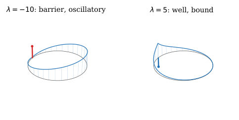
<figcaption class="paper-figure-caption"><b>Fig 1.</b> Figure 3: Ground-state probability density |Ψ0(x)|2</figcaption>
</figure>
<figure class="paper-figure-card">
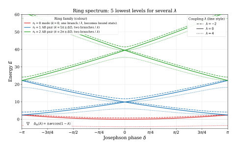
<figcaption class="paper-figure-caption"><b>Fig 2.</b> Figure 1: Five lowest signed energies of the ring as functions of the Josephson phase δ ∈(−π, π), for λ ∈ {−2, 0, 4} (line styles: dashed, solid, dotted). Curves are coloured by ring-family index nr (red: nr = 0; blue: nr = 1; green: nr = 2). Each nr ≥1 family consists of two branches k = nrπ ± δ/2 (17). For λ = 4 &gt; 2 the nr = 0 mode (red) is bound (E0 &lt; 0) for all δ.</figcaption>
</figure>
<figure class="paper-figure-card">
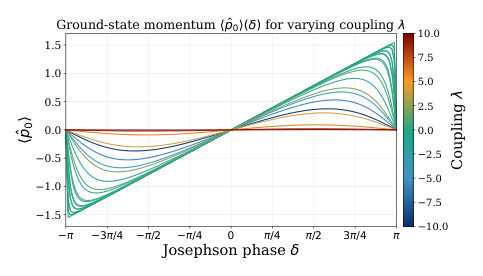
<figcaption class="paper-figure-caption"><b>Fig 3.</b> Figure 4: Ground-state momentum expectation ⟨ˆp0⟩ versus the Josephson phase δ, for a range of coup- ling strengths λ (colour bar). Blue: large negative λ (oscillatory ground state, strong barrier); red: large positive λ (bound or near-bound ground state). For |λ| ≫1 the curve is an almost pure sin δ; near λ = 0 higher harmonics build a sawtooth.</figcaption>
</figure>
<figure class="paper-figure-card">
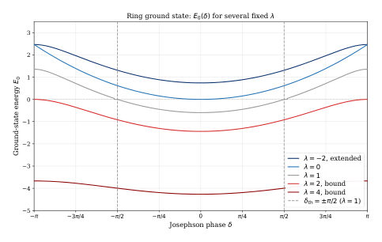
<figcaption class="paper-figure-caption"><b>Fig 4.</b> Figure 2: Ground-state energy E0(δ) for λ ∈ {−2, 0, 1, 2, 4}. For λ = 1 (grey), vertical dashed lines mark the bound-state threshold δth = ±π/2 (19). For λ = 2 (red) the state is bound (E0 ≤0) for all δ, touching E = 0 only at δ = ±π; for λ = 4 (dark red) it is deeply bound everywhere.</figcaption>
</figure>
<figure class="paper-figure-card">
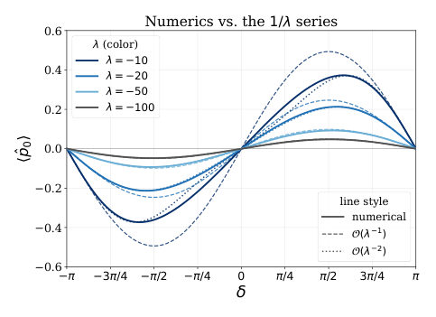
<figcaption class="paper-figure-caption"><b>Fig 5.</b> Figure 5: Numerically computed ⟨ˆp0⟩(solid), ob- tained by root-finding on (14), vs. the large-coupling truncations O(λ−1) (dashed) and O(λ−2) (dotted) of the series (28), at λ ∈{−10, −20, −50, −100}.</figcaption>
</figure>
</div>
<p><strong>Summary.</strong> This paper proposes a purely quantum-mechanical model for Josephson junctions by imposing self-adjoint boundary conditions on a particle moving on a loop. It successfully derives both the first and second Josephson relations from first principles. Crucially, the model predicts deviations from the simple sinusoidal current-phase relation for highly transparent junctions, offering a path to more accurate qubit Hamiltonians.</p>
<p><strong>Why it may be interesting.</strong> This work provides a rigorous, first-principles quantum framework for modeling superconducting qubits, directly addressing the need for higher-fidelity Hamiltonians by predicting non-sinusoidal current-phase relations.</p>
<details>
<summary>Detailed structure</summary>
<p><strong>Main problem.</strong> To develop high-fidelity quantum-mechanical models for Josephson junctions, which are critical nonlinear elements in superconducting qubits, by moving beyond standard, approximate descriptions.</p>
<p><strong>Main result.</strong> The purely quantum-mechanical boundary-condition approach successfully reproduces both the first and second Josephson relations from first principles and naturally predicts higher-order corrections (higher Josephson harmonics) for transparent junctions.</p>
<p><strong>Method.</strong> The authors formulate the problem by treating the junction as a point where the wave function must satisfy specific self-adjoint boundary conditions, solving the resulting spectral problem for the system Hamiltonian.</p>
<p><strong>Model / system.</strong> The system is a charged particle confined to a one-dimensional loop containing a single Josephson junction. The junction is mathematically defined by self-adjoint boundary conditions involving a coupling strength ($\lambda$) and a phase jump ($\delta$).</p>
<p><strong>Key observables.</strong> Supercurrent ($\langle\hat{p}_0
angle$), which is predicted to factorize as $I_c(\delta, \lambda)\sin\delta$; the voltage drop across the junction ($V \propto \dot{\delta}$).</p>
<p><strong>Important parameters / regimes.</strong> Coupling strength ($\lambda$, controlling transparency); Superconducting phase difference ($\delta$); Critical current ($I_c$).</p>
<p><strong>Assumptions / limitations.</strong> The model is based on a one-particle Hamiltonian approach, valid in the low-carrier-density regime, and assumes the junction is a point-like interface.</p>
<p><strong>Paper structure.</strong> The paper establishes the physical necessity of a quantum-mechanical treatment, derives the model using self-adjoint boundary conditions, analyzes the resulting current-phase relation in various limits (opaque, transparent), and demonstrates the emergence of both Josephson relations from the fundamental quantum structure.</p>
</details>
<details>
<summary>Abstract</summary>
<p>Josephson junctions are the central nonlinear element of superconducting qubits, yet their standard description is reached through a chain of approximations. We propose a purely quantum-mechanical model of the junction, formulated directly in Hilbert space: a charged particle moves on a one-dimensional loop, and the junction is a point at which the wave function obeys self-adjoint boundary conditions, labelled by a coupling strength $λ$, which controls the transparency of the junction, and a phase jump $δ$, which plays the role of the superconducting phase difference. For a loop with a single junction we solve the spectral problem and show that the ground-state momentum expectation, identified with the supercurrent, factorises exactly as $\langle\hat{p}_0\rangle = I_c(δ,λ)\sinδ$. For opaque junctions $I_c$ becomes independent of $δ$ and the first Josephson relation $I=I_c\sinδ$ is recovered; for strongly attractive coupling, where the ground state is bound to the junction, the $\sinδ$ law is also recovered, but with an exponentially suppressed amplitude. For more transparent junctions, however, the model \emph{predicts} deviations from the pure $\sinδ$ law: $I_c$ acquires a dependence on $δ$ already at order $λ^{-2}$, compatible with the higher Josephson harmonics recently found necessary to describe superconducting qubit spectra, and a fully transparent contact yields a current linear in $δ$. When the phase varies in time, a gauge transformation shows that the voltage drop across the junction is proportional to $\dotδ$, so that the second Josephson relation emerges without being imposed. The boundary-condition approach thus reproduces both Josephson relations from first principles and predicts corrections to them, offering a route towards higher-fidelity models of superconducting qubits.</p>
</details>
<p><sub><a href="#top">↑ back to top</a></sub></p>

<p><a id="paper-2610.13875"></a></p>
<h3 id="modular-properties-of-generalised-gibbs-ensembles-the-deformed-kdv-hierarchy"><a href="http://arxiv.org/abs/2610.13875v1">Modular Properties of Generalised Gibbs Ensembles: The Deformed KdV Hierarchy</a></h3>
<p><strong>Authors:</strong> Faisal Karimi<br>
<strong>Type:</strong> theory · <strong>Category:</strong> statistical mechanics · <strong>PDF:</strong> <a href="https://arxiv.org/pdf/2610.13875v1">https://arxiv.org/pdf/2610.13875v1</a><br>
<strong>Analysis basis:</strong> full PDF text, analyzed in chunks</p>
<div class="figure-strip-hint">↔ Scroll figures horizontally</div>
<div class="paper-figures-scroll">
<figure class="paper-figure-card">
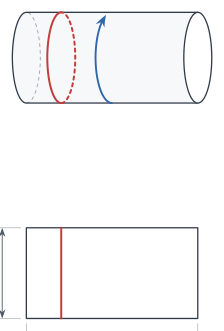
<figcaption class="paper-figure-caption"><b>Fig 1.</b> Figure 1: Interpretation of the modular transformed GGE traces: on torus (I), the GGE is given by a defect inserted as an operator D in the trace; on torus (II) the defect is rotated and the transformed GGE is given by a trace over the Hilbert space HD with a defect Hamiltonian HD inserted in the trace. The arrows indicate the direction of time.</figcaption>
</figure>
</div>
<p><strong>Summary.</strong> This theoretical work constructs and analyzes deformed conserved charges associated with the modular transformation of a Generalized Gibbs Ensemble in 2D CFTs. By proving the infinite-order commutativity of these charges and matching their eigenvalues to the TBA results in specific models, the paper provides a powerful tool for studying integrable dynamics far from equilibrium.</p>
<p><strong>Why it may be interesting.</strong> The connection between integrable structures (KdV hierarchy), quantum statistical ensembles (GGE), and exact solvability methods (TBA) is highly relevant for understanding non-equilibrium dynamics in quantum many-body systems.</p>
<details>
<summary>Detailed structure</summary>
<p><strong>Main problem.</strong> The paper investigates the modular transformation of a Generalized Gibbs Ensemble (GGE) when a deformed KdV charge is inserted, aiming to understand the resulting conserved charges.</p>
<p><strong>Main result.</strong> The authors constructed deformed KdV charges whose commutativity was proven to all orders in the chemical potential expansion. They showed that in the free fermion theory, these charges match the Thermodynamic Bethe Ansatz (TBA) expansion to all orders.</p>
<p><strong>Method.</strong> The methodology involves constructing conserved charges as formal power series in the chemical potential ($\alpha$) derived from the asymptotic modular transformation of the GGE, and verifying their commutation relations.</p>
<p><strong>Model / system.</strong> The study is set in the context of a 2D Conformal Field Theory (CFT) described by a GGE. Specific models tested include the $c=1/2$ free fermion theory and the Lee-Yang model.</p>
<p><strong>Key observables.</strong> Deformed KdV charges, ground-state eigenvalues, and the coefficients of the TBA expansion.</p>
<p><strong>Important parameters / regimes.</strong> Chemical potential ($\alpha$), central charge ($c$), and the deformation parameter ($\sigma$ or $\kappa$).</p>
<p><strong>Assumptions / limitations.</strong> The analysis is restricted to the asymptotic (perturbative) regime in the chemical potential, and the results are treated as formal power series, ignoring non-perturbative contributions.</p>
<p><strong>Figures summary.</strong> Figure 1 illustrates the modular transformation of the GGE trace involving defect insertions. Table 4 presents numerical values of the calculated eigenvalues for various charges across different low-lying states.</p>
<p><strong>Paper structure.</strong> The paper first defines the deformed KdV hierarchy via the modular transformation of the GGE. It then proves the commutativity of these charges using recursion relations. Finally, it applies this framework to calculate eigenvalues in specific models, namely the free fermion theory and the Lee-Yang model.</p>
</details>
<details>
<summary>Abstract</summary>
<p>We construct a set of conserved charges which are deformations of quantum KdV charges. They are associated with the modular transformation of a GGE with the spin-$σ$ KdV charge inserted with chemical potential $α_σ$. The charges are formal power series in the chemical potential, with coefficients given by local integrals of motion. We define local recursion relations and equivalent flow equations, prove commutativity to all orders, and establish uniqueness of the currents modulo total derivatives for a fixed generating series. We show that the eigenvalues of these deformed charges can be obtained from the thermodynamic Bethe Ansatz in two models. In the $c=1/2$ free fermion theory, the deformed charges reduce to explicit linear combinations of undeformed KdV charges, and their ground-state eigenvalues agree with the TBA expansion to all orders. In the Lee-Yang model, we find numerical agreement through cubic order in the spin-$5$ deformation for the first few charges evaluated on low-lying states.</p>
</details>
<p><sub><a href="#top">↑ back to top</a></sub></p>

<p><a id="paper-2610.13009"></a></p>
<h3 id="odd-parity-crystalline-electric-field-and-multipoles-in-icosahedral-quasicrystal-and-approximant-magnetic-toroidal-and-electric-dipoles-in-ce-based-systems"><a href="http://arxiv.org/abs/2610.13009v1">Odd-Parity Crystalline Electric Field and Multipoles in Icosahedral Quasicrystal and Approximant: Magnetic Toroidal and Electric Dipoles in Ce-Based Systems</a></h3>
<p><strong>Authors:</strong> Shinji Watanabe, Syunta Furuya, Mitsuaki Kawamura<br>
<strong>Type:</strong> theory · <strong>Category:</strong> strongly correlated electrons · <strong>PDF:</strong> <a href="https://arxiv.org/pdf/2610.13009v1">https://arxiv.org/pdf/2610.13009v1</a><br>
<strong>Analysis basis:</strong> full PDF text, analyzed in chunks</p>
<div class="figure-strip-hint">↔ Scroll figures horizontally</div>
<div class="paper-figures-scroll">
<figure class="paper-figure-card">
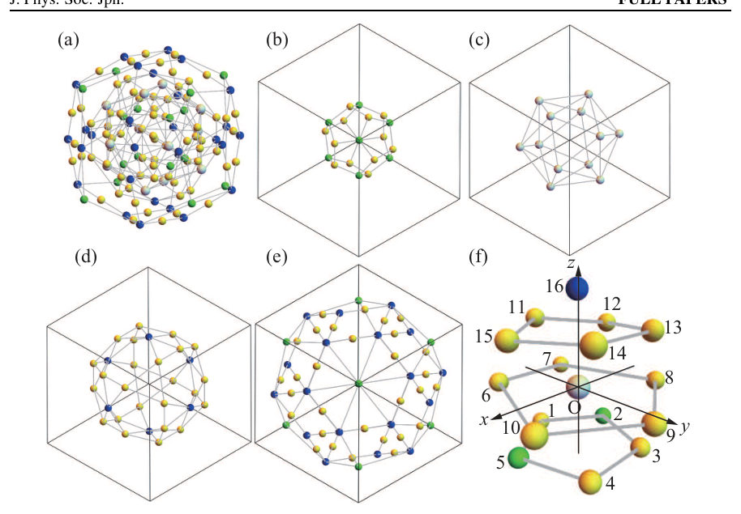
<figcaption class="paper-figure-caption"><b>Fig 1.</b> Fig. 1. (Color online) (a) Tsai-type cluster, (b) dodecahedron, (c) IC, (d) icosidodecahedron, and (e) defect</figcaption>
</figure>
<figure class="paper-figure-card">
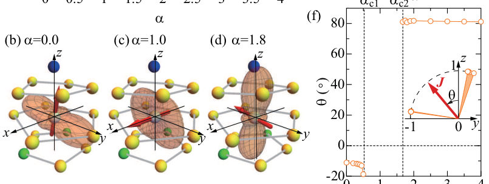
<figcaption class="paper-figure-caption"><b>Fig 2.</b> Fig. 2. (Color online) (a) The α dependence of the CEF energy of 4f electrons at the Ce site. Spherical part</figcaption>
</figure>
<figure class="paper-figure-card">
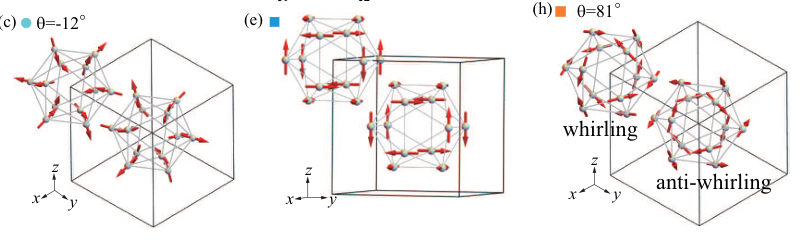
<figcaption class="paper-figure-caption"><b>Fig 3.</b> Fig. 3. (Color online) (a) Ground-state phase diagram for J2/J1 (J1 &lt; 0, J2 &lt; 0) and α. (b) and (c) magnetic</figcaption>
</figure>
<figure class="paper-figure-card">
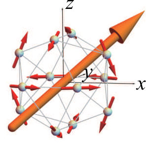
<figcaption class="paper-figure-caption"><b>Fig 4.</b> Fig. 4. (Color online) Side view of the vortex state with the magnetic toroidal moment TIC being illustrated</figcaption>
</figure>
<figure class="paper-figure-card">
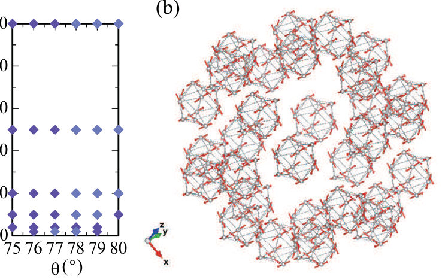
<figcaption class="paper-figure-caption"><b>Fig 5.</b> Fig. 5. (Color online) (a) Ground-state phase diagram for J2/J1 with J1 &lt; 0 and α. (b) The magnetic moments</figcaption>
</figure>
</div>
<p><strong>Summary.</strong> This work theoretically investigates the electronic structure of Ce-based icosahedral quasicrystals by formulating an odd-parity Crystalline Electric Field theory. This theory predicts the existence of odd-parity multipoles, such as the magnetic toroidal dipole, which are crucial for understanding the material's exotic magnetic and electronic behavior. The findings suggest underlying mechanisms favoring ferroic interactions in these complex, non-periodic materials.</p>
<p><strong>Why it may be interesting.</strong> The focus on symmetry breaking (odd-parity terms) and the emergence of exotic multipoles like the magnetic toroidal dipole connects to advanced topics in condensed matter magnetism and electronic structure.</p>
<details>
<summary>Detailed structure</summary>
<p><strong>Main problem.</strong> The study aims to understand the electronic properties, particularly the crystalline electric field (CEF) and associated multipoles, in Icosahedral Quasicrystals (QCs) and their approximant crystals (ACs).</p>
<p><strong>Main result.</strong> The odd-parity CEF, arising from local inversion symmetry breaking, leads to odd-parity multipoles like electric and magnetic toroidal dipoles, stabilizing noncollinear magnetic structures.</p>
<p><strong>Method.</strong> The research employs theoretical formulation based on the point charge model to derive the CEF Hamiltonian, followed by calculating expectation values for multipole operators.</p>
<p><strong>Model / system.</strong> The system under study is Ce-based icosahedral QCs and ACs. The theoretical framework involves deriving both even- and odd-parity CEF Hamiltonians for the $4f$ electrons.</p>
<p><strong>Key observables.</strong> Odd-parity multipoles (electric dipole, magnetic toroidal dipole), cluster-type MT moment, and the magnetic easy axis direction.</p>
<p><strong>Important parameters / regimes.</strong> The $4f$ and $5d$ energy levels, and the valence ratio ($\alpha$) in the approximant crystal.</p>
<p><strong>Assumptions / limitations.</strong> The analysis assumes the local coordination environment and utilizes the point charge model for the CEF calculation.</p>
<p><strong>Figures summary.</strong> Figures illustrate the atomic structure of the 1/1 AC, the local Ce coordination environment, and phase diagrams showing magnetic ground states based on varying parameters.</p>
<p><strong>Paper structure.</strong> The paper progresses from establishing the structural context of QCs, formulating the necessary odd-parity CEF theory due to symmetry breaking, and culminating in the calculation of specific odd-parity multipole expectation values.</p>
</details>
<details>
<summary>Abstract</summary>
<p>Quasicrystals (QCs) lack periodic arrangement of atoms but possess unique structural order distinct from periodic crystals and random systems. The electronic property is far from complete understanding. Here we have formulated not only even-parity but also odd-parity crystalline electric field (CEF) in the Ce-based icosahedral QC and approximant crystal (AC) on the basis of the point charge model. Under the odd-parity CEF due to local-inversion symmetry breaking at the Ce site, the hybrid wavefunction of 4f and 5d states at Ce is shown to give rise to the odd-parity multipoles such as electric dipole and magnetic toroidal (MT) dipole. We have found that the vortex order in the 1/1 AC where the magnetic moments on each icosahedron swirl is characterized by the cluster-type MT moment. The ferroic alignment of the cluster MT moments in the vortex order gives rise to the electro-magnetic effect. The cluster-MT moment is shown to be resonated with the MT dipole moments in each icosahedron by tuning the 4f energy level and 5d energy level so as to approach. We have revealed a noncollinear magnetic structure is stabilized in the ground state of the icosahedral QC cluster, behind which there exists underlying mechanism to prefer the ferroic interaction for the net MT dipole moments between the icosahedrons. We point out that the 4f and 5d energy levels can be made approach at the valence transition or the valence crossover, which is ubiquitous in the rare-earth based ACs and QCs.</p>
</details>
<p><sub><a href="#top">↑ back to top</a></sub></p>

<p><a id="paper-2610.13811"></a></p>
<h3 id="qtestbench-a-test-framework-for-evaluating-llm-generated-quantum-code"><a href="http://arxiv.org/abs/2610.13811v1">QTestBench: A Test Framework for Evaluating LLM-Generated Quantum Code</a></h3>
<p><strong>Authors:</strong> Meriem Terki, Nouhaila Innan, Minghao Shao, Muhammad Kashif, Alberto Marchisio, Muhammad Shafique<br>
<strong>Type:</strong> theory · <strong>Category:</strong> quantum information and computing · <strong>PDF:</strong> <a href="https://arxiv.org/pdf/2610.13811v1">https://arxiv.org/pdf/2610.13811v1</a><br>
<strong>Analysis basis:</strong> full PDF text, analyzed in chunks</p>
<div class="figure-strip-hint">↔ Scroll figures horizontally</div>
<div class="paper-figures-scroll">
<figure class="paper-figure-card">
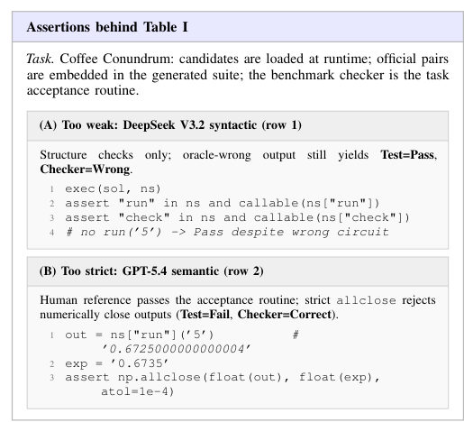
<figcaption class="paper-figure-caption"><b>Fig 1.</b> Fig. 1: Illustrative generated-test assertions for the Coffee Conundrum challenge (Table I). Each snippet shows the discriminating checks; harness boilerplate is omitted.</figcaption>
</figure>
<figure class="paper-figure-card">
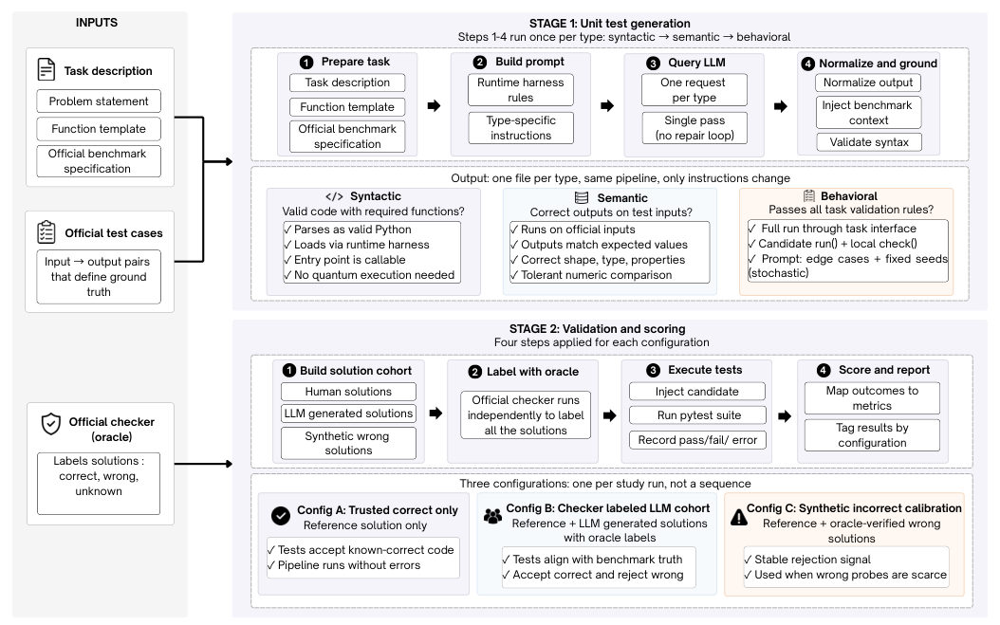
<figcaption class="paper-figure-caption"><b>Fig 2.</b> Fig. 2: QTestBench pipeline. Inputs: task description, official cases, and benchmark checker (oracle). Stage 1 generates syntactic, semantic, and behavioral pytest modules (one LLM call per type, temperature 0.8, no repair loop). Stage 2 builds a solution cohort, labels probes with the oracle, executes generated tests via runtime solution injection, and reports the metrics in Section III-C under Configuration A (trusted correct only), Configuration B (checker-labeled LLM cohort), and Configuration C (synthetic incorrect calibration; Section III-D).</figcaption>
</figure>
<figure class="paper-figure-card">
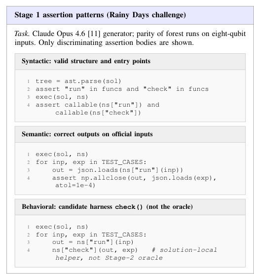
<figcaption class="paper-figure-caption"><b>Fig 3.</b> Fig. 3: Core assertion patterns for the three generated test types (Table II), exemplified on the Rainy Days challenge.</figcaption>
</figure>
<figure class="paper-figure-card">
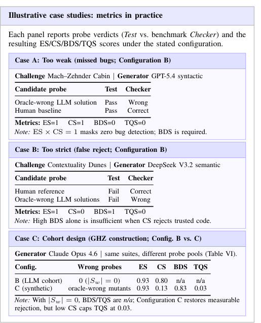
<figcaption class="paper-figure-caption"><b>Fig 4.</b> Fig. 4: Three case studies on challenges other than the motivational example, connecting QTestBench metrics to concrete oracle vs. test outcomes.</figcaption>
</figure>
</div>
<p><strong>Summary.</strong> This paper introduces QTestBench, a novel framework to rigorously evaluate the quality of test suites generated by Large Language Models for quantum code. It moves beyond simple solution checking by measuring how well the generated tests can distinguish correct quantum implementations from faulty ones. The framework provides a reproducible benchmark, highlighting that while LLMs can write executable tests, their ability to detect bugs remains a significant challenge.</p>
<p><strong>Why it may be interesting.</strong> This work provides a crucial, rigorous evaluation methodology for assessing the trustworthiness of AI-generated quantum verification code, which is vital for advancing quantum software development.</p>
<details>
<summary>Detailed structure</summary>
<p><strong>Main problem.</strong> Existing quantum benchmarks only assess if LLMs generate correct quantum solutions, failing to measure if the generated <em>tests</em> can reliably distinguish correct implementations from faulty ones.</p>
<p><strong>Main result.</strong> The best LLM generator achieved a test quality of 0.71 on QHack, demonstrating that mere executability overstates the true test quality.</p>
<p><strong>Method.</strong> The authors introduce QTestBench, a framework that evaluates LLM-generated quantum test suites by comparing test verdicts against an independent benchmark checker across three validation cohorts.</p>
<p><strong>Model / system.</strong> The work focuses on quantum code generation for quantum circuits, tested using established platforms like PennyLane QHack and Qiskit HumanEval tasks.</p>
<p><strong>Key observables.</strong> Test Quality Score (TQS), Executability Score (ES), Correctness Score (CS), and Bug-Detection Score (BDS).</p>
<p><strong>Important parameters / regimes.</strong> The evaluation involves syntactic, semantic, and behavioral test types, and uses oracle-verified synthetic mutants when natural faulty solutions are scarce.</p>
<p><strong>Assumptions / limitations.</strong> The framework explicitly treats the generated tests as non-ground truth, relying instead on independent benchmark checkers as the oracle.</p>
<p><strong>Figures summary.</strong> Figures illustrate the QTestBench pipeline, showing the comparison of test verdicts against checker labels, and tables summarize mean performance scores across different LLMs on QHack and Qiskit tasks.</p>
<p><strong>Paper structure.</strong> The paper introduces the problem gap, details the QTestBench framework (two-stage pipeline), presents the metrics (ES, CS, BDS, TQS, CQ), benchmarks several LLMs on QHack and Qiskit, and discusses the implications of the results.</p>
</details>
<details>
<summary>Abstract</summary>
<p>Large language models (LLMs) have shown strong results in classical code generation and are increasingly used to write the unit tests that safeguard that code. Whether they can do the same for quantum software is less clear, because quantum programs are probabilistic, depend on numerical tolerances, and are judged by domain-specific checkers, so a well-formed test can still disagree with the benchmark's verdict. Existing quantum benchmarks measure whether a model produces a correct solution, but not whether its tests can distinguish correct implementations from faulty ones. We introduce QTestBench, a framework that evaluates LLM-generated quantum test suites against independent benchmark checkers, never treating the tests themselves as ground truth. For each task, QTestBench prompts models to produce syntactic, semantic, and behavioral tests, injects candidate solutions at runtime, and compares each test verdict with the checker's label under three validation cohorts, each answering a distinct diagnostic question. We benchmark five LLMs on eight PennyLane QHack challenges and ten Qiskit HumanEval tasks. Generated suites almost always execute, but discrimination lags behind: the best generator reaches a test quality of 0.71 on QHack and 0.34 on Qiskit HumanEval, so executability alone overstates test quality. Oracle-verified synthetic mutants stabilize bug-detection estimates when natural faulty solutions are scarce, as on three of ten Qiskit tasks that yield none. QTestBench offers a reproducible, cross-framework benchmark for the trustworthiness of LLM-generated quantum tests.</p>
</details>
<p><sub><a href="#top">↑ back to top</a></sub></p>

<p><a id="paper-2610.12798"></a></p>
<h3 id="quadratic-xy-anisotropy-correction-to-the-spontaneous-staggered-magnetization-of-the-gapped-xyz-spin-math963math-chain"><a href="http://arxiv.org/abs/2610.12798v1">Quadratic XY-anisotropy correction to the spontaneous staggered magnetization of the gapped XYZ spin-$1/2$ chain</a></h3>
<p><strong>Authors:</strong> Felipe Taha Sant'Ana<br>
<strong>Type:</strong> theory · <strong>Category:</strong> statistical mechanics · <strong>PDF:</strong> <a href="https://arxiv.org/pdf/2610.12798v1">https://arxiv.org/pdf/2610.12798v1</a><br>
<strong>Analysis basis:</strong> full PDF text, analyzed in chunks</p>
<div class="figure-strip-hint">↔ Scroll figures horizontally</div>
<div class="paper-figures-scroll">
<figure class="paper-figure-card">
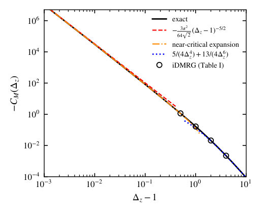
<figcaption class="paper-figure-caption"><b>Fig 1.</b> FIG. 1. The coefficient −CM(∆z) of Eq. (4) across the gapped antiferromagnetic phase ∆z &gt; 1 (solid black), to- gether with the leading near-critical asymptote 3π2</figcaption>
</figure>
</div>
<p><strong>Summary.</strong> This theoretical work calculates the leading quadratic correction to the staggered magnetization in the gapped XYZ spin-1/2 chain due to XY anisotropy. By employing advanced techniques from integrable models and elliptic functions, the authors derive a closed-form expression for this correction coefficient. The results provide quantitative predictions for the system's behavior near criticality and in the strong-coupling limit.</p>
<p><strong>Why it may be interesting.</strong> The rigorous calculation of correlation function corrections in integrable quantum spin chains provides deep insights into critical behavior and the interplay between anisotropy and quantum fluctuations, relevant to understanding quantum phase transitions in magnetic materials.</p>
<details>
<summary>Detailed structure</summary>
<p><strong>Main problem.</strong> The paper derives a closed-form expression for the coefficient governing the leading quadratic correction to the spontaneous staggered magnetization of the gapped XYZ spin-1/2 chain due to XY anisotropy.</p>
<p><strong>Main result.</strong> A closed form for the coefficient is found, which is strictly negative and exhibits specific asymptotic behaviors in both the Ising and near-critical limits.</p>
<p><strong>Method.</strong> The derivation utilizes the Baxter-Kelland-Jimbo-Miwa-Nakayashiki polarization formula, combining elliptic function theory with perturbation theory and comparison with numerical results.</p>
<p><strong>Model / system.</strong> The system is the gapped XYZ spin-1/2 chain, characterized by three nearest-neighbor exchange couplings ($J_x, J_y, J_z$) and analyzed in the antiferromagnetic gapped regime.</p>
<p><strong>Key observables.</strong> Spontaneous staggered magnetization ($ar{M}_z$), and the quadratic correction coefficient $C_M(\Delta_z)$.</p>
<p><strong>Important parameters / regimes.</strong> XY anisotropy ($\gamma$), longitudinal anisotropy ($\Delta_z$), and the distance to the isotropic point ($\Delta_z - 1$).</p>
<p><strong>Assumptions / limitations.</strong> The analysis relies on the validity of perturbation theory expansions in $\gamma^2$ and the use of elliptic variables to handle the implicit dependence of the Hamiltonian couplings.</p>
<p><strong>Figures summary.</strong> Figure 1 compares the calculated $C_M(\Delta_z)$ against the known near-critical asymptote and the general near-critical expansion.</p>
<p><strong>Paper structure.</strong> The paper builds upon the eight-vertex solution framework, deriving the coefficient $C_M$ by analyzing the polarization formula, confirming the result via fourth-order perturbation theory, and validating it against infinite-DMRG calculations.</p>
</details>
<details>
<summary>Abstract</summary>
<p>The staggered order parameter of the gapped XYZ spin-$1/2$ chain follows from the eight-vertex solution, but in elliptic variables that fix the Hamiltonian couplings only implicitly. We derive a closed form for the coefficient governing the leading quadratic response of the spontaneous staggered magnetization to the XY anisotropy at fixed longitudinal anisotropy in the gapped antiferromagnetic regime. Starting from the Baxter--Kelland--Jimbo--Miwa--Nakayashiki polarization formula, we show that at fixed longitudinal anisotropy both the modular nome and the crossing-parameter variable of the formula move with the XY anisotropy, and that the motion of the crossing-parameter variable reverses the sign of the expansion at fixed elliptic variables. The coefficient is a rational term plus a Lambert series. It is strictly negative and bounded above by a rational function of the longitudinal anisotropy, to which it is asymptotic in the Ising limit. At the isotropic point it diverges as the inverse five-halves power of the distance to that point, and since the Lambert sum has an asymptotic expansion with exponentially small remainder, the subleading terms of the divergence also follow in closed form. When the XY anisotropy vanishes as the five-fourths power of the distance to the isotropic point, the ratio of the perturbed to the unperturbed order parameter tends to a Gaussian in the scaling variable, and the quadratic truncation is controlled when that variable is small. A fourth-order perturbative calculation in the spin chain, with no input from the eight-vertex solution, reproduces the leading strong-coupling behaviour, and infinite-DMRG calculations at four anisotropies in the gapped regime are consistent with the closed form.</p>
</details>
<p><sub><a href="#top">↑ back to top</a></sub></p>

<p><a id="paper-2610.13037"></a></p>
<h3 id="quantum-circuit-residuals-for-receptor-functional-potency-prediction-predictive-gains-and-quadratic-structure"><a href="http://arxiv.org/abs/2610.13037v1">Quantum-Circuit Residuals for Receptor Functional Potency Prediction: Predictive Gains and Quadratic Structure</a></h3>
<p><strong>Authors:</strong> Chenyan Jia, Yaping Ma, Yuen Wang, Cong Guo<br>
<strong>Type:</strong> theory · <strong>Category:</strong> disordered systems and neural networks · <strong>PDF:</strong> <a href="https://arxiv.org/pdf/2610.13037v1">https://arxiv.org/pdf/2610.13037v1</a><br>
<strong>Analysis basis:</strong> full PDF text, analyzed in chunks</p>
<div class="figure-strip-hint">↔ Scroll figures horizontally</div>
<div class="paper-figures-scroll">
<figure class="paper-figure-card">
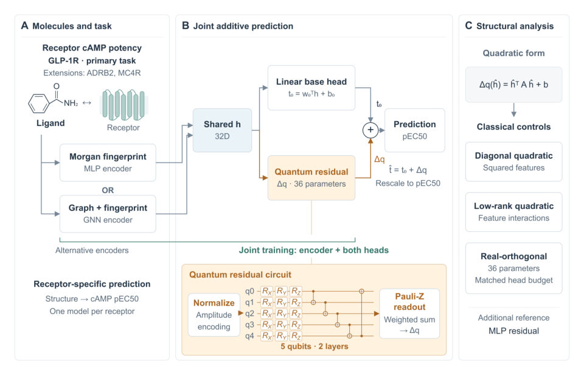
<figcaption class="paper-figure-caption"><b>Fig 1.</b> Figure 1: Quantum-circuit residual framework and structured controls. (A) Ligand struc- tures are used to predict receptor cAMP-related pEC50, with each receptor modeled sepa- rately. The MLP takes Morgan fingerprints, whereas the GNN combines molecular graphs and fingerprints. (B) The shared representation feeds the linear base head and quantum residual head; their outputs are summed and transformed back to the pEC50 scale. All three components are trained jointly end to end. The light-orange module shows amplitude encod- ing, a two-layer five-qubit circuit, and single-qubit Pauli-Z expectation-value readout. (C) Quadratic structure of the quantum residual and classical controls. The...</figcaption>
</figure>
<figure class="paper-figure-card">
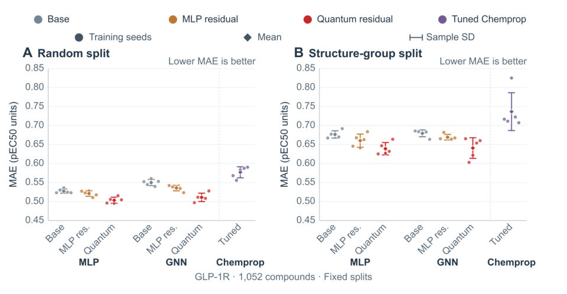
<figcaption class="paper-figure-caption"><b>Fig 2.</b> Figure 2: GLP-1R functional potency prediction. (A,B) Out-of-fold MAE under random and structure-group splits, respectively; lower values indicate better performance. Circles denote individual-seed results, diamonds denote means, and error bars show sample standard deviations. MLP/GNN denote encoders, and MLP res. denotes the MLP residual head.</figcaption>
</figure>
<figure class="paper-figure-card">
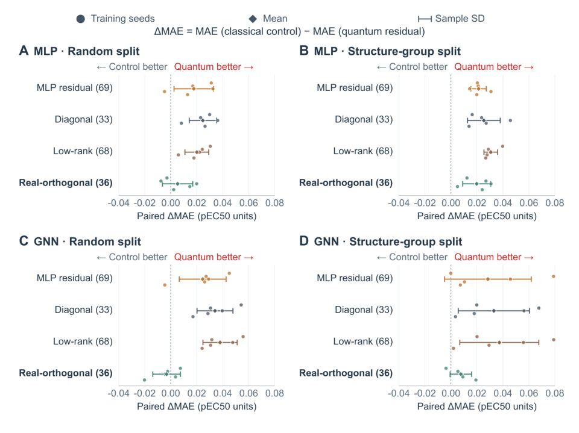
<figcaption class="paper-figure-caption"><b>Fig 3.</b> Figure 3: Paired MAE comparisons of classical residual controls and quantum-residual mod- els on GLP-1R. (A,B) MLP encoder under random and structure-group splits, respectively; (C,D) GNN encoder under the corresponding splits. Differences are control MAE minus quantum-residual MAE, in pEC50 units: positive values favor the quantum residual (right), and negative values favor the classical control (left). Dashed lines mark zero difference. Cir- cles denote individual-seed differences, diamonds denote means, and error bars show sample standard deviations. Parentheses indicate trainable residual-head parameter counts; the quantum residual head has 36 parameters.</figcaption>
</figure>
<figure class="paper-figure-card">
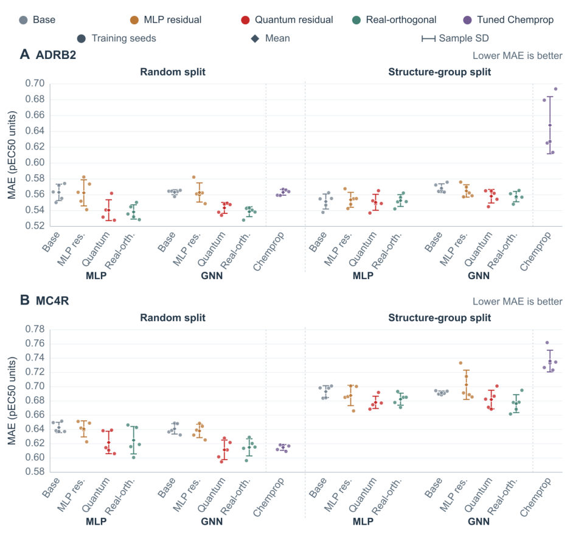
<figcaption class="paper-figure-caption"><b>Fig 4.</b> Figure 4: Functional potency prediction for ADRB2 and MC4R. (A,B) Out-of-fold MAE for ADRB2 and MC4R, respectively, under both split schemes; lower values indicate better performance. MAE axes are scaled separately for each receptor. Circles denote individual- seed results, diamonds denote means, and error bars show sample standard deviations. MLP/GNN denote encoders; MLP res. and Real-orth. denote the MLP and real-orthogonal quadratic residual heads, respectively.</figcaption>
</figure>
</div>
<p><strong>Summary.</strong> This work proposes using quantum-circuit residuals as an advanced prediction head for molecular property prediction, specifically receptor functional potency. By jointly training a classical molecular encoder with this quantum residual, the authors significantly improve prediction accuracy over baseline models. This demonstrates a practical application of quantum feature extraction in computational chemistry and drug discovery.</p>
<p><strong>Why it may be interesting.</strong> It provides a concrete, applied example of using quantum circuits not for simulating fundamental physics, but as a structured, high-dimensional feature extractor within a machine learning pipeline, which is relevant to ML-physics.</p>
<details>
<summary>Detailed structure</summary>
<p><strong>Main problem.</strong> The paper addresses the challenge of accurately predicting receptor functional potency ($ ext{pEC}_{50}$) from molecular structures using machine learning.</p>
<p><strong>Main result.</strong> The integration of a quantum-circuit residual head significantly reduces the Mean Absolute Error (MAE) compared to standard base models, demonstrating the potential of quantum feature extraction in cheminformatics.</p>
<p><strong>Method.</strong> A hybrid quantum-classical model is trained where a molecular encoder (MLP or GNN) feeds into a prediction head composed of a linear base term and a quantum-circuit residual term.</p>
<p><strong>Model / system.</strong> The system involves predicting biological activity ($   ext{pEC}_{50}$) for receptors like $    ext{GLP-1R}$. The quantum component uses amplitude encoding to map the molecular embedding into a five-qubit state, which is then processed by a parameterized quantum circuit to yield an expectation value residual.</p>
<p><strong>Key observables.</strong> Mean Absolute Error (MAE) for $    ext{pEC}_{50}$ prediction, paired MAE differences, and performance under simulated noise.</p>
<p><strong>Important parameters / regimes.</strong> The quantum residual head has 36 trainable parameters; performance is tested across random and structure-group data splits.</p>
<p><strong>Assumptions / limitations.</strong> The quantum residual gains are compared against structured classical controls (e.g., real-orthogonal controls), and noise simulations assume ideal preparation and local Markovian noise.</p>
<p><strong>Figures summary.</strong> Figures illustrate the quantum-circuit residual framework and compare MAE across different splits and noise levels; Tables quantify MAE improvements for various residual head structures.</p>
<p><strong>Paper structure.</strong> The paper introduces the hybrid model, details the quantum residual calculation (including its quadratic form), evaluates performance on $ ext{GLP-1R}$ using various encoders and splits, compares against classical controls, and finally analyzes robustness under simulated noise.</p>
</details>
<details>
<summary>Abstract</summary>
<p>The predictive performance of neural networks for receptor functional potency modeling depends on both molecular representations and prediction-head design. Using GLP-1R cAMP-related pEC50 prediction as the primary task, we jointly train a classical molecular encoder with a linear base head and a shallow quantum-circuit residual head that share the learned molecular representation. We evaluate the models using random and structure-group splits, include tuned Chemprop as a domain reference, and extend the evaluation to ADRB2 and MC4R. Under the GLP-1R structure-group split, the quantum-residual models reduce mean absolute error relative to the corresponding base models from 0.677 to 0.639 with a multilayer perceptron (MLP) encoder and from 0.680 to 0.641 with a graph neural network (GNN) encoder. In structural control experiments, a parameter-count-matched real-orthogonal control achieves similar predictive performance, suggesting that some quantum-residual gains may be associated with structured quadratic feature interactions. By combining receptor functional potency prediction with structural analysis of the quantum residual, this study provides empirical evidence to inform compact residual-head design and highlights the potential of quantum-circuit parameterizations for this task.</p>
</details>
<p><sub><a href="#top">↑ back to top</a></sub></p>

<p><a id="paper-2610.13155"></a></p>
<h3 id="x-ray-absorption-spectroscopic-studies-of-oxygen-deficient-double-perovskite-oxide-ndbacomath974mathomath975math-math976math"><a href="http://arxiv.org/abs/2610.13155v1">X-ray absorption spectroscopic studies of oxygen-deficient double perovskite oxide NdBaCo$_2$O$_{5+δ}$ ($δ\sim 0.65$)</a></h3>
<p><strong>Authors:</strong> Himanshu Pant, S. Khalid, R. Bindu<br>
<strong>Type:</strong> both · <strong>Category:</strong> strongly correlated electrons · <strong>PDF:</strong> <a href="https://arxiv.org/pdf/2610.13155v1">https://arxiv.org/pdf/2610.13155v1</a><br>
<strong>Analysis basis:</strong> full PDF text, analyzed in chunks</p>
<div class="figure-strip-hint">↔ Scroll figures horizontally</div>
<div class="paper-figures-scroll">
<figure class="paper-figure-card">
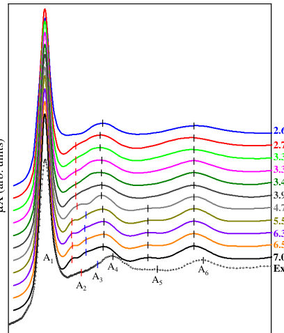
<figcaption class="paper-figure-caption"><b>Fig 1.</b> FIG. 3. Comparison of calculated Nd LIII absorption spectra for different cluster sizes with respect to the absorbing atom along with experimental spectra. The cluster size in ˚A is given against each of the calculated spectra. The calculated spectra are shifted 0.8 eV towards higher energy, and vertical marks correspond to different features (A1 - A6) in the absorption spectra.</figcaption>
</figure>
<figure class="paper-figure-card">
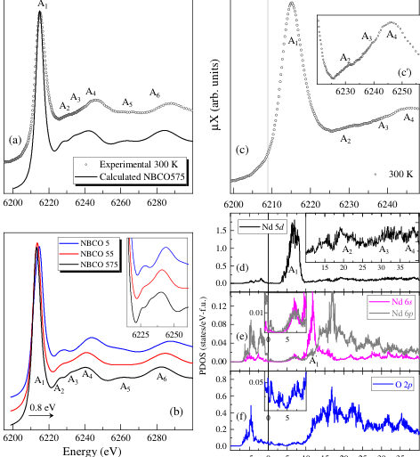
<figcaption class="paper-figure-caption"><b>Fig 2.</b> FIG. 2. Comparison of (a) normalised experimental Nd LIII edge at 300 K for sample under study along with calculated XANES for NBCO 575; (b) calculated XANES for NBCO 5, NBCO 55 and NBCO 575; the inset shows the magnified view of features in the energy range 6215 - 6260 eV; (c) ex- perimental spectrum at 300 K; (c’) shows a magnified view of the experimental spectrum at 300 K in 6220 - 6260 eV range. Partial density of states (PDOS) calculated using the DFT + U approach for NBCO 575 corresponding to (d) Nd 5d states; the inset shows a magnified view for Nd 5d states in 10 - 40 eV range; (e) Nd 6s and 6p states; the inset shows the magnified view in the (-1) - 10 eV range; and (f) O 2p...</figcaption>
</figure>
<figure class="paper-figure-card">
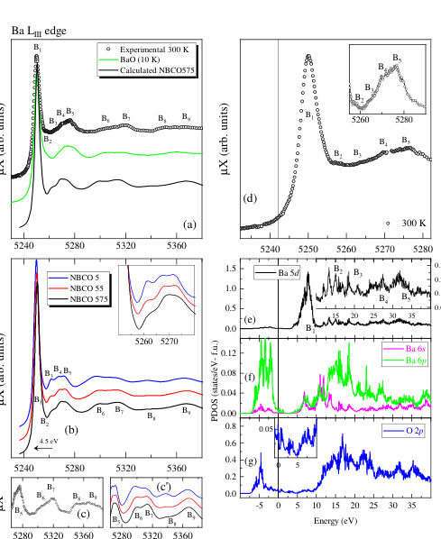
<figcaption class="paper-figure-caption"><b>Fig 3.</b> FIG. 4. Comparison of (a) normalised experimental Ba LIII edge at 300 K for the sample under study along with cal- culated XANES for NBCO 575; (b) calculated XANES for NBCO 5, NBCO 55 and NBCO 575; the inset shows the magnified view of features in the energy range 5250 - 5280 eV; (c) magnified view of normalised experimental spectrum at 300 K (5265 - 5385 eV); (c’) magnified view of calculated XANES for NBCO 5, NBCO 55 and NBCO 575 (5265 - 5385 eV); (d) experimental spectrum at 300 K; the inset shows a magnified view of the features in the energy range 5255 - 5290 eV. PDOS calculated using the DFT + U approach for NBCO 575 corresponding to (e) Ba 5d states; the inset shows a magnified view...</figcaption>
</figure>
<figure class="paper-figure-card">
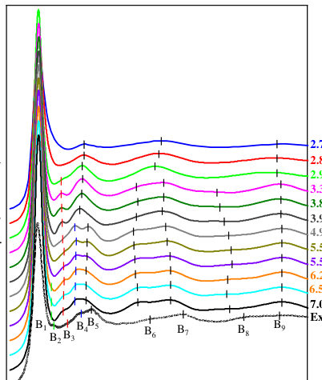
<figcaption class="paper-figure-caption"><b>Fig 4.</b> FIG. 5. Comparison of calculated Ba LIII absorption spectra for different cluster sizes with respect to the absorbing atom along with experimental spectra. The cluster size in ˚A is given against each of the calculated spectra. The calculated spectra are shifted 4.5 eV towards lower energy, and vertical marks correspond to different features (B1 - B9) in the absorption spectra.</figcaption>
</figure>
<figure class="paper-figure-card">
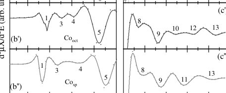
<figcaption class="paper-figure-caption"><b>Fig 5.</b> FIG. 7. Comparison of (a) normalised experimental Co K edge at 300 K for the sample under study along with calcu- lated spectra for NBCO 55 and different Co environments, i.e., octahedral (Cooct) and square pyramidal (Cosp). Sec- ond derivative of (b) experimental pre-edge at 300 K along with calculated spectra for (b’) Cooct and (b”) Cosp. Second derivative of (c) experimental near-edge spectrum at 300 K along with calculated spectra for (c’) Cooct and (c”) Cosp. The calculated spectra have been shifted 2.5 eV to match the white line in the experimental spectra.</figcaption>
</figure>
</div>
<p><strong>Summary.</strong> This work uses X-ray spectroscopy and DFT calculations to probe the electronic structure of oxygen-deficient double perovskites. The key finding is that oxygen vacancies may reside at basal sites, a counterintuitive result that successfully explains the material's variable range hopping conduction and magnetic behavior. This research aids in designing better oxygen sensors and controlling ionic mobility in these complex oxides.</p>
<p><strong>Why it may be interesting.</strong> The strong correlation between structural defects (vacancies) and emergent electronic/magnetic properties is a hallmark of strongly correlated electron systems, making it relevant for understanding charge transport in complex oxides.</p>
<details>
<summary>Detailed structure</summary>
<p><strong>Main problem.</strong> The study investigates the relationship between oxygen vacancy distribution, magnetic inhomogeneity, and charge transport in oxygen-deficient double perovskite oxides.</p>
<p><strong>Main result.</strong> The XANES analysis suggests oxygen vacancies may occur at basal sites, which explains the observed Griffith phase and variable range hopping conduction mechanism.</p>
<p><strong>Method.</strong> The research combines X-ray Absorption Near Edge Structure (XANES) spectroscopy with first-principles calculations based on Density Functional Theory (DFT+U) and multiple scattering methods.</p>
<p><strong>Model / system.</strong> The physical system is the oxygen-deficient double perovskite oxide, NdBaCo2O(5+δ), which exhibits complex electronic and magnetic behavior dependent on oxygen stoichiometry.</p>
<p><strong>Key observables.</strong> XANES spectral features (Co K, Ba LIII, Nd LIII edges), oxidation states, oxygen vacancy distribution (apical vs. basal sites), and magnetic transition temperatures.</p>
<p><strong>Important parameters / regimes.</strong> Oxygen stoichiometry (δ), temperature (T), and the local coordination environment of the Co ions.</p>
<p><strong>Assumptions / limitations.</strong> The analysis assumes that the local structure, probed by XANES, can reveal the true vacancy distribution, even when conflicting with common understanding.</p>
<p><strong>Figures summary.</strong> Figures likely show calculated and measured XANES spectra across different edges, PDOS plots detailing Co 3d/4p hybridization, and structural models illustrating vacancy ordering.</p>
<p><strong>Paper structure.</strong> The paper follows a structure of characterizing the material via synthesis and bulk measurements (XRD, Magnetometry), followed by detailed local electronic structure analysis using XANES and DFT+U calculations to pinpoint the role of oxygen vacancies.</p>
</details>
<details>
<summary>Abstract</summary>
<p>The degree of oxygen vacancy in A-site-doped layered double perovskite oxides can lead to anion vacancy ordering, which subsequently results in distinct superstructures. We have studied oxygen deficient double perovskite oxide, NdBaCo$2$O$_{5+δ}$ ($δ\sim$ 0.65), utilising X-ray absorption near edge structure (XANES) spectroscopy complemented by multiple scattering and first-principles calculations based on density functional theory (DFT+U). The present results establish a direct correlation between oxygen-vacancy distribution, magnetic inhomogeneity, and charge transport in layered cobaltates. Our investigations on the Co K, Ba, and Nd $L_{\mathrm{III}}$ edges suggest that the near-edge spectra, based on the number and shape of the spectral features, indicate the value of $δ$ for the compound under study lies closer to 0.75. The analysis of the Ba $L_{\mathrm{III}}$ edge spectrum confirms the +2 oxidation state for Ba ions. The Co K-edge near-edge spectra suggest the possibility of oxygen vacancies arising at the basal sites in addition to the apical sites. This is counterintuitive to the common understanding that oxygen vacancies usually occur at the apical sites, i.e., in the lanthanide (Nd) layer in these compounds. Such a distribution of oxygen vacancies naturally explains the Griffith phase and the conduction mechanism of variable range hopping observed in the compound. The vacancy distribution, when at the optimum level, can also bring about easier oxygen ion mobility and a more sensitive and faster oxygen sensor. We believe that our results will help in tailoring oxygen-ion mobility and enhancing oxygen-sensing performance.</p>
</details>
<p><sub><a href="#top">↑ back to top</a></sub></p>
</details>
<h2 id="secondary-cond-mat-archives">Secondary cond-mat archives</h2>
<p><em>Papers from cond-mat.mtrl-sci, mes-hall, other, soft, supr-con. These archives are de-prioritized — they appear at the end regardless of relevance score.</em></p>
<h3 id="relevant-in-secondary-archives-12">Relevant in secondary archives (12)</h3>

<p><a id="paper-2610.13727"></a></p>
<h3 id="anomaly-induced-transport-in-holographic-superconductors"><a href="http://arxiv.org/abs/2610.13727v1">Anomaly induced transport in holographic superconductors</a></h3>
<p><strong>Authors:</strong> Ashis Tamang, Nishal Rai, Javier Esteban, Eugenio Megias<br>
<strong>Type:</strong> theory · <strong>Category:</strong> statistical mechanics · <strong>PDF:</strong> <a href="https://arxiv.org/pdf/2610.13727v1">https://arxiv.org/pdf/2610.13727v1</a><br>
<strong>Analysis basis:</strong> full PDF text, analyzed in chunks
<strong>Topic relevance:</strong> <code>Keldysh / 2PI / non-Gaussian methods</code> <strong>3/5</strong> · <code>driven-dissipative phase transition</code> <strong>2/5</strong> · <code>methods for driven-dissipative</code> <strong>2/5</strong> · <code>non-equilibrium universality</code> <strong>2/5</strong> · <code>analog quantum simulation</code> <strong>1/5</strong> · <code>correlated / nonlocal dissipation</code> <strong>1/5</strong></p>
<div class="figure-strip-hint">↔ Scroll figures horizontally</div>
<div class="paper-figures-scroll">
<figure class="paper-figure-card">
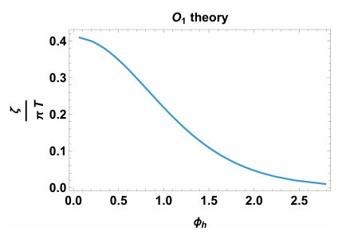
<figcaption class="paper-figure-caption"><b>Fig 1.</b> Figure 1. Plots of the relation between the near horizon parameters, ϕh and ζ/(πT), for the O1 theory (left panel) and the O2 theory (right panel) with SSB.</figcaption>
</figure>
<figure class="paper-figure-card">
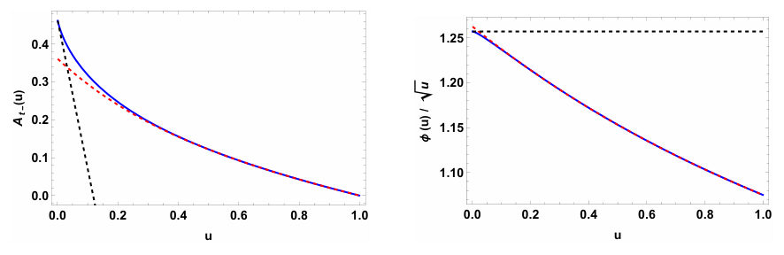
<figcaption class="paper-figure-caption"><b>Fig 2.</b> Figure 2. Results for the O1 theory. Plots of the solution of the background for At−(u) (left panel) and for ϕ(u) (right panel) as a function of u. We display: (i) the numerical solutions (solid blue lines), (ii) the analytical approximations near the horizon given by Eqs. (2.16)-(2.17) (dashed red line), and (iii) the analytical approximations near the boundary given by Eqs. (2.18)-(2.19) (dashed black lines). We have set ζ/(πT) = 0.2, ϕh = 1.074, ¯µ−= 0.465, ρ−/(πT)3 = 3.942, ⟨O1⟩/(πT) = 1.256 and ⟨O2⟩/(πT)3 = 0.</figcaption>
</figure>
<figure class="paper-figure-card">
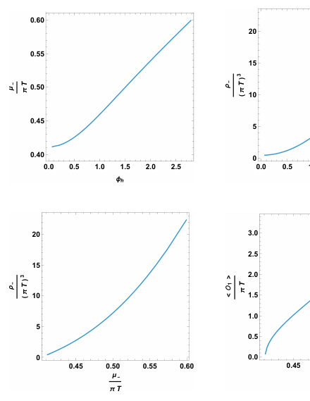
<figcaption class="paper-figure-caption"><b>Fig 3.</b> Figure 3. Results for the O1 theory. Upper panels: plot of µ−/(πT) (left panel), ρ−/(πT)3</figcaption>
</figure>
<figure class="paper-figure-card">
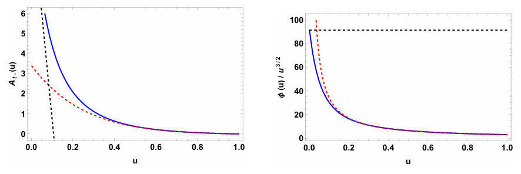
<figcaption class="paper-figure-caption"><b>Fig 4.</b> Figure 4. Results for the O2 theory. Plots of the solution of the background for At−(u) (left panel) and for ϕ(u) (right panel) as a function of u. We have set ζ/(πT) = 0.2, ϕh = 3.004, ¯µ−= 11.334, ρ−/(πT)3 = 105.951, ⟨O1⟩/(πT) = 0 and ⟨O2⟩/(πT)3 = 91.368. See fig. 2 for further details.</figcaption>
</figure>
<figure class="paper-figure-card">
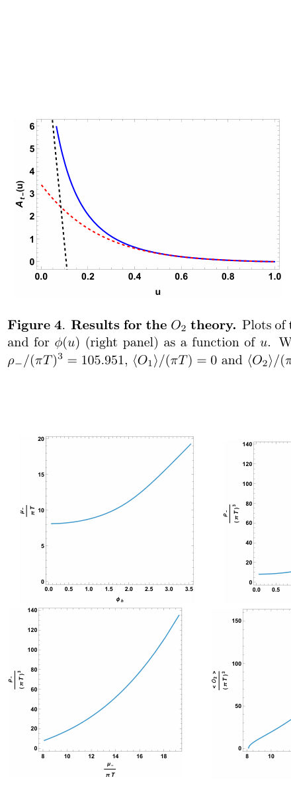
<figcaption class="paper-figure-caption"><b>Fig 5.</b> Figure 5. Results for the O2 theory. Upper panels: plot of µ−/(πT) (left panel), ρ−/(πT)3</figcaption>
</figure>
</div>

<p><strong>Summary.</strong> This work analyzes anomaly-induced transport in holographic superconductors exhibiting spontaneous symmetry breaking. By using Kubo formulae, the authors show that SSB extends the influence of anomalies into non-anomalous current sectors. The findings confirm that this effect is robust, remaining independent of the specific scalar field quantization used in the model.</p>
<p><strong>Why it may be interesting.</strong> While focused on condensed matter/gravity duality, the study of transport coefficients and phase transitions (SSB) in strongly coupled systems is relevant to understanding non-equilibrium dynamics in quantum many-body systems.</p>
<details>
<summary>Detailed structure</summary>
<p><strong>Main problem.</strong> The paper investigates how anomaly-induced transport properties behave in a holographic superconductor when spontaneous symmetry breaking (SSB) occurs, specifically examining the impact on non-anomalous currents.</p>
<p><strong>Main result.</strong> SSB allows anomaly-induced transport to significantly impact the non-anomalous sector, and this effect is shown to be independent of the specific scalar field quantization chosen ($O_1$ vs $O_2$).</p>
<p><strong>Method.</strong> The authors use Kubo formulae to compute chiral magnetic conductivities within the holographic framework, solving background field equations numerically in the probe limit.</p>
<p><strong>Model / system.</strong> The model is a holographic superconductor incorporating vector, axial, and a non-anomalous U(1) gauge field, driven by a charged scalar field undergoing SSB. The analysis compares two quantization schemes ($\Delta=1$ and $\Delta=3$).</p>
<p><strong>Key observables.</strong> Chiral magnetic conductivities ($\sigma_{B\dots}$), and the induced current $\langle J^w 
angle$ associated with the non-anomalous symmetry.</p>
<p><strong>Important parameters / regimes.</strong> The scalar field quantization dimension ($\Delta=1$ or $\Delta=3$), the temperature relative to the critical temperature ($T/T_c$), and the limits $O_i 	o 0$ and $O_i 	o \infty$.</p>
<p><strong>Assumptions / limitations.</strong> The analysis is performed in the probe limit, neglecting metric fluctuations, and relies on the AdS/CFT correspondence framework.</p>
<p><strong>Figures summary.</strong> Figures compare numerical solutions for background fields and conductivities across different temperature regimes and quantization choices, validating results against analytical limits.</p>
<p><strong>Paper structure.</strong> The paper introduces the model and solves for background fields ($O_1$ and $O_2$ theories), examines transverse fluctuations, derives constitutive relations using Kubo formulae, and finally presents the main results for conductivities.</p>
</details>
<details>
<summary>Abstract</summary>
<p>We investigate the anomaly-induced transport properties of a holographic superconductor exhibiting spontaneous symmetry breaking. The holographic model incorporates vector and axial gauge fields, an additional non-anomalous $U(1)$ symmetry, and a charged scalar field that drives the phase transition. Working in the probe limit, we numerically construct the superconducting background under two alternative scalar field quantizations, corresponding to operators with scaling dimensions $Δ=1$ and $Δ=3$ (denoted as the $O_1$ and $O_2$ theories, respectively). Using Kubo formulae, we compute the chiral magnetic conductivities and examine their response to the scalar condensate. Our findings demonstrate that spontaneous symmetry breaking allows anomaly-induced transport to extend beyond anomalous currents, significantly impacting the non-anomalous sector as well. Remarkably, this effect appears in both theories, indicating that the influence on the non-anomalous sector is independent of the chosen quantization. The comparison of our numerical results with the analytical limits for $O_i \to 0$ and $O_i \to \infty$ $(i=1,2)$ reveals consistent behavior across both theories.</p>
</details>
<p><sub><a href="#top">↑ back to top</a></sub></p>

<p><a id="paper-2610.13255"></a></p>
<h3 id="solitons-in-the-nonlinear-schrodinger-equation-with-the-pseudo-raman-term-anti-diffusion-gain-and-nonlinear-loss"><a href="http://arxiv.org/abs/2610.13255v1">Solitons in the nonlinear Schrödinger equation with the pseudo-Raman term, anti-diffusion gain and nonlinear loss</a></h3>
<p><strong>Authors:</strong> Evgeny M. Gromov, Boris A. Malomed<br>
<strong>Type:</strong> theory · <strong>Category:</strong> other · <strong>PDF:</strong> <a href="https://arxiv.org/pdf/2610.13255v1">https://arxiv.org/pdf/2610.13255v1</a><br>
<strong>Analysis basis:</strong> full PDF text, analyzed in chunks
<strong>Topic relevance:</strong> <code>driven-dissipative phase transition</code> <strong>3/5</strong> · <code>non-equilibrium universality</code> <strong>3/5</strong> · <code>methods for driven-dissipative</code> <strong>2/5</strong> · <code>Keldysh / 2PI / non-Gaussian methods</code> <strong>1/5</strong> · <code>correlated / nonlocal dissipation</code> <strong>1/5</strong></p>
<div class="figure-strip-hint">↔ Scroll figures horizontally</div>
<div class="paper-figures-scroll">
<figure class="paper-figure-card">
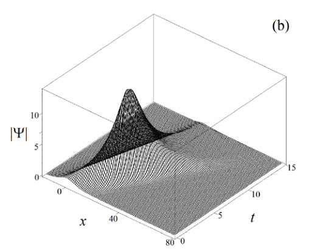
<figcaption class="paper-figure-caption"><b>Fig 1.</b> Fig. 1. The spatiotemporal distribution ( )t x, Ψ produced by the</figcaption>
</figure>
<figure class="paper-figure-card">
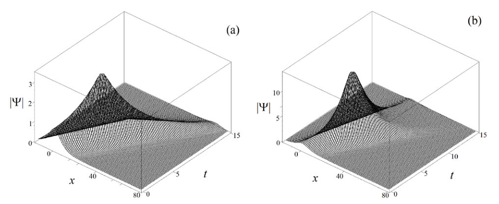
<figcaption class="paper-figure-caption"><b>Fig 2.</b> Figure 2 additionally illustrates the suppression of the blow=up by displaying the maximum values of</figcaption>
</figure>
<figure class="paper-figure-card">
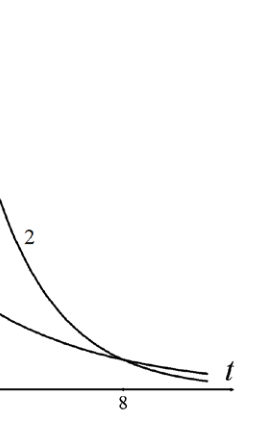
<figcaption class="paper-figure-caption"><b>Fig 3.</b> Fig. 2. The maximum value of ( )t x, Ψ vs. time, as produced by the same</figcaption>
</figure>
<figure class="paper-figure-card">
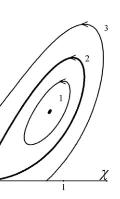
<figcaption class="paper-figure-caption"><b>Fig 4.</b> Fig. 3. Phase trajectories (24) for different values of C . Here and in Fig. 4,</figcaption>
</figure>
<figure class="paper-figure-card">
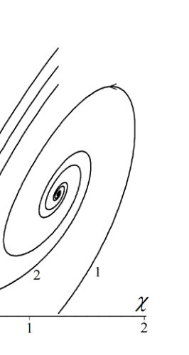
<figcaption class="paper-figure-caption"><b>Fig 5.</b> Fig. 4. Phase-plane trajectories of numerical solutions of Eqs. (19)-(20) with</figcaption>
</figure>
</div>

<p><strong>Summary.</strong> This paper analyzes solitons in a complex, nonconservative Nonlinear Schrödinger Equation featuring pseudo-Raman scattering, cubic loss, and anti-diffusion gain. By reducing the dynamics to a fixed-point analysis, the authors predict the existence of stable soliton states. The results are confirmed by numerical simulations, demonstrating how the system's stability depends critically on the balance between its various nonlinear and gain/loss terms.</p>
<p><strong>Why it may be interesting.</strong> This work extends the standard soliton framework by incorporating multiple dissipative and gain terms (pseudo-SRS, cubic loss, anti-diffusion gain), making it highly relevant to advanced quantum optics and nonlinear wave physics.</p>
<details>
<summary>Detailed structure</summary>
<p><strong>Main problem.</strong> The paper investigates the existence and dynamics of solitons within a nonconservative Nonlinear Schrödinger Equation (NLSE) that incorporates pseudo-Raman scattering, cubic loss, and a novel anti-diffusion gain term.</p>
<p><strong>Main result.</strong> The analysis predicts that stable soliton solutions exist, corresponding to a stable fixed point (FP) in the derived dynamical system, provided the initial conditions fall within a specific attraction basin.</p>
<p><strong>Method.</strong> The study employs a combination of analytical techniques, including the $   ext{sech}$ ansatz and reduction to coupled balance equations, alongside direct numerical simulations of the full nonconservative NLSE.</p>
<p><strong>Model / system.</strong> The model is an NLSE derived from the Zakharov system, extended to include pseudo-SRS effects and cubic loss. A key feature is the linear anti-diffusion gain, which necessitates the use of absorptive boundary conditions to prevent blow-up.</p>
<p><strong>Key observables.</strong> Soliton amplitude, wave momentum, and the stability/location of the fixed point (FP) in the reduced dynamical system.</p>
<p><strong>Important parameters / regimes.</strong> The relationship between nonlinear-loss and anti-diffusion-gain coefficients ($\sigma$), which dictates the nature of the fixed point (e.g., stable spiral vs. center-type).</p>
<p><strong>Assumptions / limitations.</strong> The analysis assumes the validity of the extended adiabatic approximation for deriving the NLSE, and the use of absorptive boundary conditions to manage the inherent blow-up tendency from the anti-diffusion gain.</p>
<p><strong>Figures summary.</strong> Figures illustrate phase-plane trajectories showing attraction to the stable fixed point or decay, and direct simulations confirm stable soliton propagation when initial conditions match the predicted FP values.</p>
<p><strong>Paper structure.</strong> The paper progresses by first defining the complex nonconservative NLSE model, then deriving the reduced dynamical system using analytical approximations, and finally corroborating the theoretical predictions through detailed numerical simulations.</p>
</details>
<details>
<summary>Abstract</summary>
<p>We introduce a nonconservative nonlinear Schrödinger equation (NLSE) which includes additional nonlinear terms accounting for the pseudo-stimulated-Raman-scattering (pseudo-SRS) effect and cubic loss. An essentially novel feature of the model is the linear anti-diffusion gain, which leads to the obvious blow-up in the infinite or spatially periodic system. We consider the absorptive boundary conditions, which suppress the blow-up driven by effective convective instability in the setup. The NSLE model is derived, in the extended adiabatic approximation, from the underlying Zakharov system, which includes the viscosity term acting on its low-frequency component and the anti-diffusion gain in the high-frequency (HF) one. The latter term appears if the expansion, with respect to the deviation of the wavenumber, is performed not around the minimum-loss point (as in the usual situation), but around a maximum-loss point. Dynamics of moving solitons in the model is addressed by means of analytical and numerical methods. The sech approximation for the soliton predicts it as a stable fixed point (FP) of the system of balance equations for the HF norm and wave momentum, derived in the moving reference frame. The FP attraction basin is identified too. The predictions are corroborated by direct simulations of the full NSLE with the absorptive boundary conditions.</p>
</details>
<p><sub><a href="#top">↑ back to top</a></sub></p>

<p><a id="paper-2610.13149"></a></p>
<h3 id="orbital-transfer-reveals-material-selective-structure-in-rydberg-excitons"><a href="http://arxiv.org/abs/2610.13149v1">Orbital transfer reveals material-selective structure in Rydberg excitons</a></h3>
<p><strong>Authors:</strong> Mengli Wang, Peng Chen, Wenqi Xue, Haonan Xia, Hong Zhang, Benniu Zhang<br>
<strong>Type:</strong> both · <strong>Category:</strong> other · <strong>PDF:</strong> <a href="https://arxiv.org/pdf/2610.13149v1">https://arxiv.org/pdf/2610.13149v1</a><br>
<strong>Analysis basis:</strong> full PDF text, analyzed in chunks
<strong>Topic relevance:</strong> <code>Keldysh / 2PI / non-Gaussian methods</code> <strong>3/5</strong> · <code>analog quantum simulation</code> <strong>2/5</strong> · <code>methods for driven-dissipative</code> <strong>1/5</strong></p>
<div class="figure-strip-hint">↔ Scroll figures horizontally</div>
<div class="paper-figures-scroll">
<figure class="paper-figure-card">
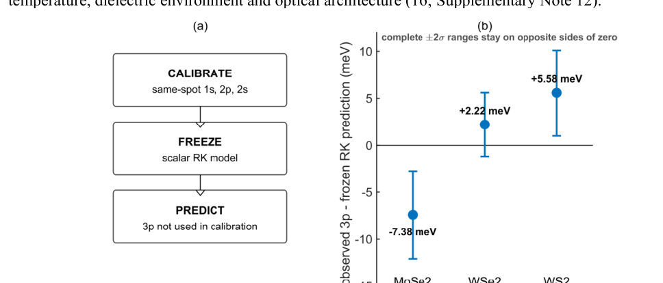
<figcaption class="paper-figure-caption"><b>Fig 1.</b> Fig. 1. A held-out orbital reveals a material-dependent deviation. (a) The 1s, 2p and 2s energies determine the scalar RK model, which is then held fixed for the 3p test. (b) The 3p residual (observed minus predicted) is −7.38 meV in MoSe2, +2.22 meV in WSe2 and +5.58 meV in WS₂. Reported ±2σ peak-error boxes preserve the opposite MoSe2/WS2 signs. The boxes show sensitivity to simultaneous peak perturbations rather than confidence intervals; the extreme ±3σ WS₂ box reaches across zero (Fig. S4).</figcaption>
</figure>
<figure class="paper-figure-card">
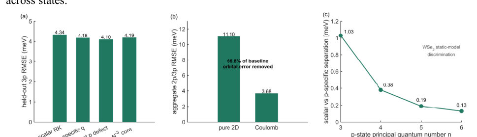
<figcaption class="paper-figure-caption"><b>Fig 2.</b> Fig. 2. A useful screening model retains a state-selective remainder. (a) With literature high-field q and same-sample 1s–2s scaling, three one-parameter p-sector extensions calibrated on 2p offer modest improvement when tested on 3p. (b) In that separate benchmark, scalar RK reduces the held-out orbital RMSE from 11.10 to 3.68 meV relative to pure 2D Coulomb, a 66.8% reduction. (c) For the stated WSe2 p-specific comparison, the model separation falls from 1.03 meV at 3p to 0.13 meV at 6p. These results use a separate calibration from the primary Fig. 1 test.</figcaption>
</figure>
<figure class="paper-figure-card">
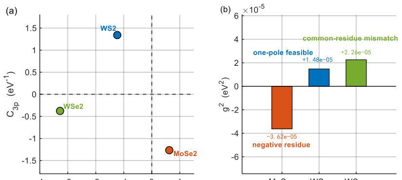
<figcaption class="paper-figure-caption"><b>Fig 3.</b> Fig. 3. Material-dependent orbital curvature at a fixed screening reference. (a) Removing gap and common-scale shifts from the 2p/3p energies leaves distinct divided-difference pairs in MoSe2, WS₂ and WSe2. (b) In the specified passive common-scalar single-pole projection, WS₂ has a positive-weight solution, MoSe2 fails that minimum test at the measured central values and WSe2 lies outside the tested shared-residue form. The classification is conditional on this representation; the alternative self-consistent WSe2 branch and multipole examples are treated in Supplementary Note 7A. A frozen prediction for the next WS₂ orbital WS₂ then turns this residual structure into a prospective...</figcaption>
</figure>
<figure class="paper-figure-card">
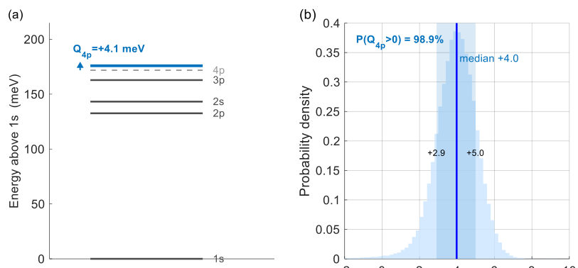
<figcaption class="paper-figure-caption"><b>Fig 4.</b> Fig. 4. A frozen model sets a prospective WS₂ 4p target. (a) The existing WS2 2p/3p curvatures fix a positive single-pole continuation, giving Q4p = +4.08 meV. (b) Fixed-q numerical propagation yields a median near +4.0 meV and a conditional 68% interval near +2.9 to +5.0 meV (Supplementary Note 13). The probability P(Q₄p &gt; 0) is evaluated under the fixed-q one-pole model with Gaussian peak-error propagation (200,000 draws); cross-device q variation and future experimental covariance are not included. A new 4p measurement on the same experimental platform can evaluate this previously frozen output once the independent parameter and measurement uncertainties are included. Discussion and...</figcaption>
</figure>
</div>

<p><strong>Summary.</strong> This research investigates the predictive power of an effective Hamiltonian (the Rytova-Keldysh model) describing Rydberg excitons in 2D semiconductors. By testing the model's prediction for an unmeasured state (3p or 4p), the authors reveal distinct, material-specific orbital signatures. These findings establish a method for using spectral data to constrain and predict the properties of higher-lying quantum states.</p>
<p><strong>Why it may be interesting.</strong> This work directly probes the limits of effective Hamiltonians in strongly correlated or highly interacting quantum systems, providing a rigorous framework for testing the physical transferability of spectral models beyond the measured data points.</p>
<details>
<summary>Detailed structure</summary>
<p><strong>Main problem.</strong> The study aims to determine how much material-specific electronic structure information can be extracted from Rydberg exciton spectra using an effective Hamiltonian calibrated on a subset of energy levels.</p>
<p><strong>Main result.</strong> The analysis reveals distinct, material-dependent orbital patterns in the residuals, allowing for a parameter-fixed prediction of a future, unmeasured state (e.g., $Q_{4p}=+4.08 	ext{ meV}$ for $ ext{WS}_2$).</p>
<p><strong>Method.</strong> The authors use spectral fitting techniques, comparing the Rytova-Keldysh (RK) Hamiltonian's predictions against measured exciton energies across different semiconductors.</p>
<p><strong>Model / system.</strong> The system involves Rydberg excitons in atomically thin semiconductors ($   ext{MoSe}_2$, $ ext{WS}_2$, $   ext{WSe}_2$). The model is based on the scalar Rytova-Keldysh Hamiltonian, which accounts for nonlocal dielectric screening effects.</p>
<p><strong>Key observables.</strong> The 3p energy residual ($E_{3p}(	ext{obs}) - E_{3p}(	ext{RK})$), material-dependent orbital curvatures ($C_{12;p}$), and the predicted energy of the next state ($Q_{4p}$).</p>
<p><strong>Important parameters / regimes.</strong> The screening parameter $q$, and the energy shifts in meV (e.g., $-7.38 	ext{ meV}$ in $ ext{MoSe}_2$).</p>
<p><strong>Assumptions / limitations.</strong> The primary assumption is that the RK model correctly captures the global dielectric screening, and the analysis relies on extrapolating physical constraints from measured states to predict unmeasured ones.</p>
<p><strong>Figures summary.</strong> Figures illustrate the sign-reversal of the 3p residual across different materials, the reduction in error (RMSE) when using the RK model versus a pure 2D Coulomb reference, and the distinct material-dependent curvature patterns.</p>
<p><strong>Paper structure.</strong> The paper progresses by first establishing the RK model using 1s, 2p, and 2s states, then testing its transferability to the 3p state, quantifying the error reduction, and finally using the observed orbital structure to constrain and predict the energy of the next higher state (4p).</p>
</details>
<details>
<summary>Abstract</summary>
<p>Rydberg excitons in atomically thin semiconductors offer a sensitive view of dielectric screening and electronic structure. As their spectra become increasingly well resolved, a central question is how much material information an effective Hamiltonian can predict beyond the states used to determine it. Using the 1s, 2p and 2s levels to determine a scalar Rytova-Keldysh Hamiltonian, we test its transfer to the excluded 3p state. The transfer deviations have opposite signs: the observed 3p lies 7.38 meV below the prediction in MoSe2 and 5.58 meV above it in WS2; the opposite signs persist across the complete reported +/-2-sigma peak-error boxes. In a separate high-field-calibrated benchmark, RK removes 66.8% of the orbital error of a pure two-dimensional Coulomb reference, making the remaining state-selective deviations particularly informative. After separating gap and common-scale contributions, the residuals reveal distinct material-dependent orbital patterns and constrain simple multichannel descriptions. For WS2, the measured 2p/3p curvatures yield a parameter-fixed prediction, Q4p=+4.08 meV, for a future same-platform measurement. Together these results show how a well-performing spectral model can be tested for transferable physical information, with the next unmeasured state providing an independent experimental check.</p>
</details>
<p><sub><a href="#top">↑ back to top</a></sub></p>

<p><a id="paper-2610.13420"></a></p>
<h3 id="predicting-nanofabrication-variance-a-conditional-diffusion-model"><a href="http://arxiv.org/abs/2610.13420v1">Predicting Nanofabrication Variance: A Conditional Diffusion Model</a></h3>
<p><strong>Authors:</strong> Wenhan Zhang, Ben Mills, Oleksandr Buchnev, Kevin F. MacDonald<br>
<strong>Type:</strong> both · <strong>Category:</strong> disordered systems and neural networks · <strong>PDF:</strong> <a href="https://arxiv.org/pdf/2610.13420v1">https://arxiv.org/pdf/2610.13420v1</a><br>
<strong>Analysis basis:</strong> full PDF text, analyzed in chunks
<strong>Topic relevance:</strong> <code>methods for driven-dissipative</code> <strong>3/5</strong> · <code>Keldysh / 2PI / non-Gaussian methods</code> <strong>1/5</strong> · <code>analog quantum simulation</code> <strong>1/5</strong> · <code>quantum measurements</code> <strong>1/5</strong></p>
<div class="figure-strip-hint">↔ Scroll figures horizontally</div>
<div class="paper-figures-scroll">
<figure class="paper-figure-card">
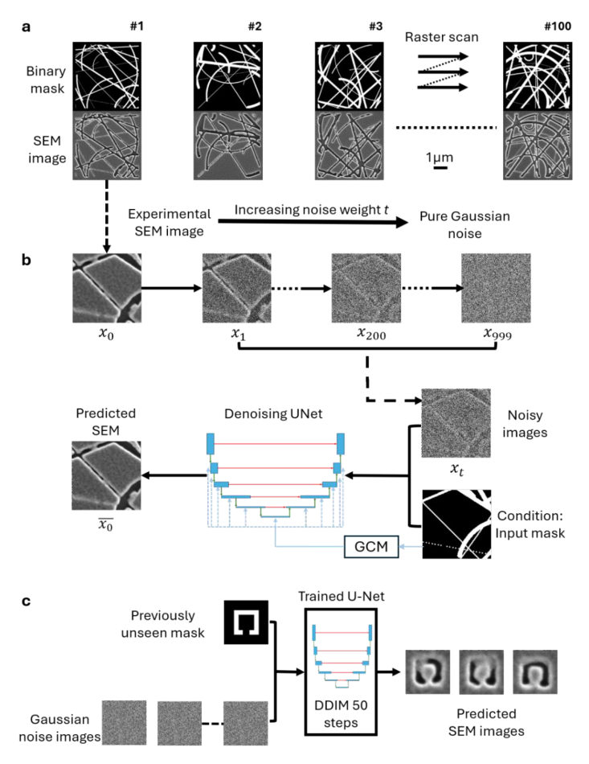
<figcaption class="paper-figure-caption"><b>Fig 1.</b> FIG 1. Conditional diffusion model for FIB milling – training and application. (a) Representative pairs of binary mask and corresponding fabricated sample SEM images used for model training and validation. Note that in the binary masks, white areas are those to be milled, while in SEM images, milled regions [exposed silicon nitride substrate] appear darker than the surrounding [gold] surface. (b) Diffusion model training procedure – the full training dataset is generated through a ‘forward’ process of incrementally adding Gaussian noise to sample SEM images [upper row]. A U-Net is then trained to perform the reverse ‘de- noising’ process, conditioned on the binary mask. (c) From a set of...</figcaption>
</figure>
<figure class="paper-figure-card">
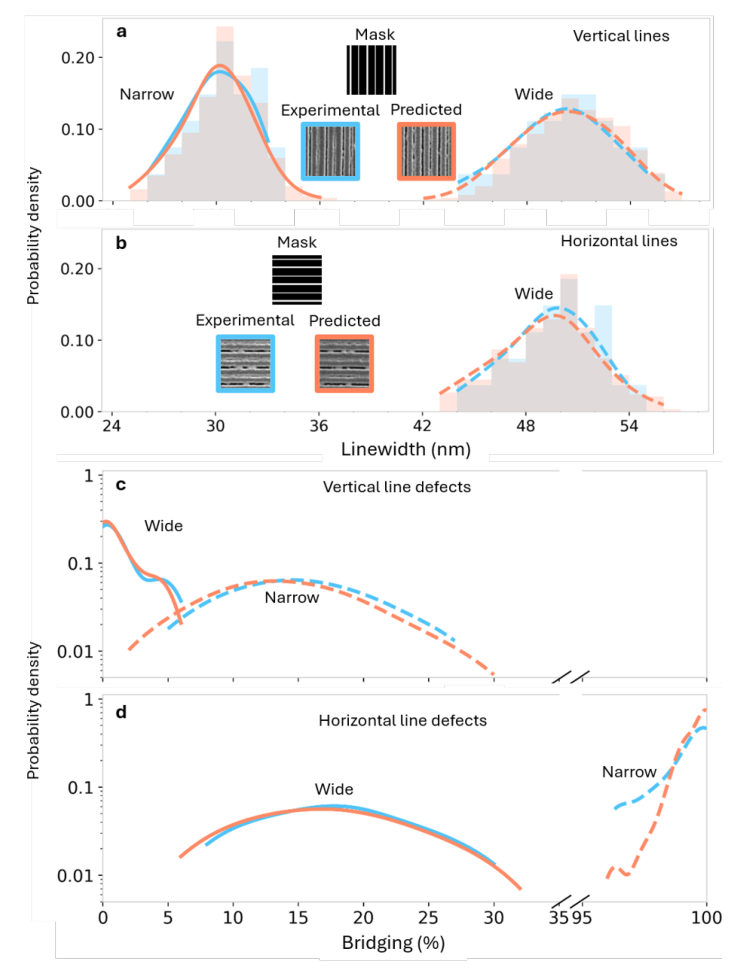
<figcaption class="paper-figure-caption"><b>Fig 2.</b> FIG 2. Diffusion model predictions vs. experimental FIB milling outcomes. (a, b) Histograms [overlaid with best-fit probability- density curves] of milled linewidths in simulated [orange bars and curves] and experimentally fabricated [blue] patterns of wide/narrow straight-line trenches milled through a gold film, in (a) vertical and (b) horizontal orientations, perpendicular and parallel respectively to the ion beam raster scan lines. Inset images show the relevant binary masks, representative section of corresponding experimental sample SEM images, and representative diffusion model-generated pseudo-SEM images. [Narrow trenches are omitted from (b) because high defect rates preclude...</figcaption>
</figure>
<figure class="paper-figure-card">
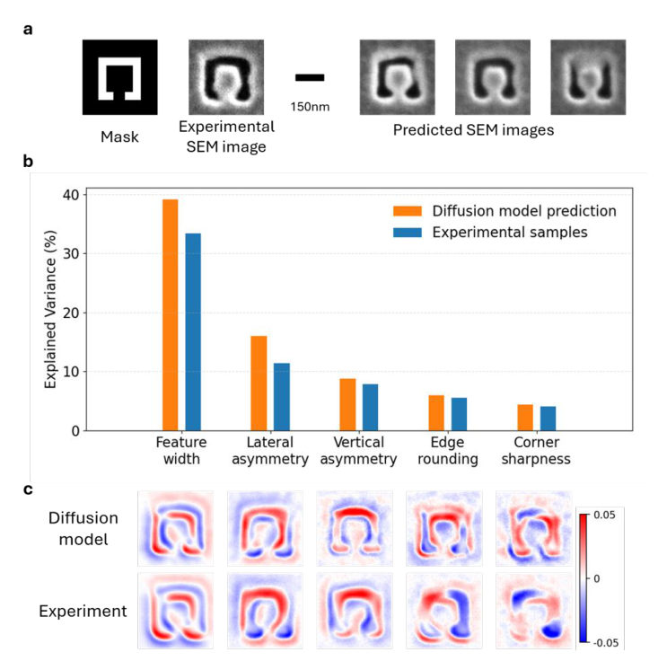
<figcaption class="paper-figure-caption"><b>Fig 3.</b> FIG 3. Principal component analysis of structural deformation modes diffusion model simulated vs. experimentally fabricated split- rings. (a) The split ring binary mask and corresponding representative experimental sample SEM images, and diffusion model- generated pseudo-SEM images. (b) Explained variance (EV) of the first five principal components of structural deformation in a decomposition of simulated pseudo-SEM images [orange] and fabricated sample SEM images [blue]. (c) Corresponding principal component eigenimages illustrating the spatial distributions of deformation modes. [The color scale represents dimensionless principal-component loadings, with positive/negative values denoting...</figcaption>
</figure>
</div>

<p><strong>Summary.</strong> This paper introduces a conditional diffusion model to overcome the limitation of deterministic fabrication simulations by modeling the full statistical distribution of outcomes from FIB milling. By training on input masks and resulting SEM images, the model predicts an ensemble of possible structures, allowing for statistical analysis of process variability. This establishes a probabilistic framework for designing robust nanostructures.</p>
<p><strong>Why it may be interesting.</strong> While the physics is in materials science, the core methodology—using advanced generative ML models (Diffusion Models) to characterize the statistical uncertainty of a physical process—is highly relevant to modeling noise and uncertainty in quantum measurements or open quantum systems.</p>
<details>
<summary>Detailed structure</summary>
<p><strong>Main problem.</strong> Existing models for nanofabrication processes, such as Focused Ion Beam (FIB) milling, predict only a single deterministic outcome, failing to account for the inherent stochastic variability caused by physical fluctuations.</p>
<p><strong>Main result.</strong> The conditional diffusion model successfully predicts a realistic <em>distribution</em> of possible output sample structures, accurately capturing variations in edge morphology, linewidths, and defect probabilities observed experimentally.</p>
<p><strong>Method.</strong> The authors trained a conditional diffusion model, using a U-Net architecture and SPADE blocks, to learn the statistical distribution of fabricated outcomes conditioned on the input design mask.</p>
<p><strong>Model / system.</strong> The physical system is the fabrication of micro- and nanostructures (e.g., straight-line trenches) using FIB milling on thin gold films. The model learns the mapping from a binary input mask to the probability distribution of the resulting SEM image.</p>
<p><strong>Key observables.</strong> Linewidth distributions, defect probabilities, and Principal Component Analysis (PCA) modes characterizing structural deformation.</p>
<p><strong>Important parameters / regimes.</strong> Ablation-rate fluctuations, redeposition effects, and the input design mask geometry.</p>
<p><strong>Assumptions / limitations.</strong> The model assumes that the statistical variability of the fabrication process can be effectively modeled by a conditional diffusion process, and that DDIM sampling provides sufficient fidelity for inference.</p>
<p><strong>Figures summary.</strong> Figures compare simulated vs. experimental histograms of milled linewidths for straight-line trenches, and show PCA analysis comparing simulated and experimental structural deformation modes for complex geometries like split-rings.</p>
<p><strong>Paper structure.</strong> The paper introduces the problem of fabrication variability, details the conditional diffusion model training (forward/reverse process, loss functions), demonstrates its ability to generate an ensemble of realistic outcomes, and validates its predictions against experimental measurements of linewidths and structural modes.</p>
</details>
<details>
<summary>Abstract</summary>
<p>Micro- and nanostructures fabricated by focused ion beam (FIB) milling invariably deviate from input designs due to systematic and stochastic effects such as ablation-rate fluctuations, and redeposition. As such, nominally identical iterations of a given process yield a distribution of non-identical fabrication outcomes, leading to variations in the physical (optical, mechanical) properties of fabricated structures. Existing models of the milling process typically predict a single deterministic fabrication result, neglecting this variability. Here we present a conditional diffusion model that learns the statistical distribution of process outcomes conditioned on input design, enabling it to predict a realistic distribution of possible output sample structures. These predictions accurately reproduce edge morphology, linewidth variations, and defect probabilities observed in fabricated samples, enabling statistical analysis of milling performance and the identification of dominant structural and process parameter-dependent deformation modes. The work establishes a probabilistic modelling framework for fabrication variability analysis and fabrication-aware design optimization.</p>
</details>
<p><sub><a href="#top">↑ back to top</a></sub></p>

<p><a id="paper-2610.12956"></a></p>
<h3 id="vacuum-field-mediated-landau-level-reconstruction-in-a-cavity-coupled-two-dimensional-electron-gas"><a href="http://arxiv.org/abs/2610.12956v1">Vacuum-field-mediated Landau-level reconstruction in a cavity-coupled two-dimensional electron gas</a></h3>
<p><strong>Authors:</strong> Zi-Heng Zhu, Yu Chen<br>
<strong>Type:</strong> theory · <strong>Category:</strong> other · <strong>PDF:</strong> <a href="https://arxiv.org/pdf/2610.12956v1">https://arxiv.org/pdf/2610.12956v1</a><br>
<strong>Analysis basis:</strong> full PDF text, analyzed in chunks
<strong>Topic relevance:</strong> <code>analog quantum simulation</code> <strong>3/5</strong> · <code>Keldysh / 2PI / non-Gaussian methods</code> <strong>1/5</strong> · <code>interference shaping light</code> <strong>1/5</strong> · <code>methods for driven-dissipative</code> <strong>1/5</strong></p>
<div class="figure-strip-hint">↔ Scroll figures horizontally</div>
<div class="paper-figures-scroll">
<figure class="paper-figure-card">
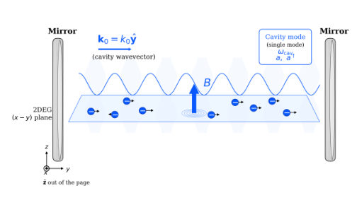
<figcaption class="paper-figure-caption"><b>Fig 1.</b> FIG. 1. Cavity-coupled Landau-level geometry. A 2DEG in the x–y plane is subject to a perpendicular field B ˆz. The selected cavity mode is polarized along ˆx and spatially mod- ulated along ˆy with wave vector k0. Spectral and transport calculations use a strip with hard walls at x = ±Lx/2 and pe- riodic boundary conditions along y; chiral edge states there- fore propagate along y. The mirrors are schematic.</figcaption>
</figure>
<figure class="paper-figure-card">
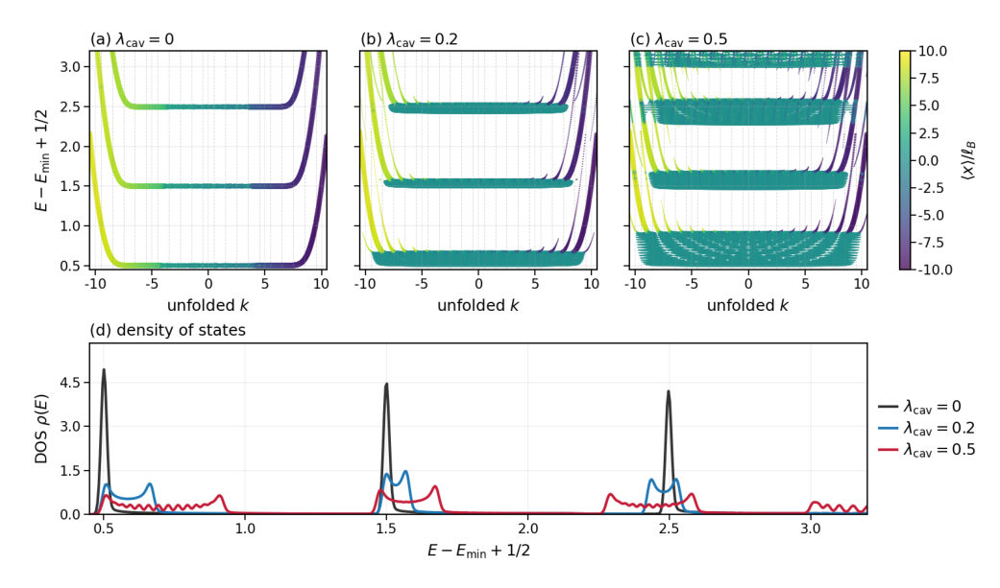
<figcaption class="paper-figure-caption"><b>Fig 2.</b> FIG. 2. Spectral reconstruction at representative couplings. Panels (a)–(c): unfolded spectral weights for λcav = 0, 0.2, and 0.5. Point size encodes the Fourier-sector weight of each eigenstate and color encodes ⟨x⟩/ℓB. Repeated Landau-level branches at momenta shifted by 2nk0 are projections of the same reduced-zone eigenstate, not additional independent edge branches. Panel (d): strip density of states for the same three couplings, obtained with Gaussian broadening Γ = 0.01ωB.</figcaption>
</figure>
<figure class="paper-figure-card">
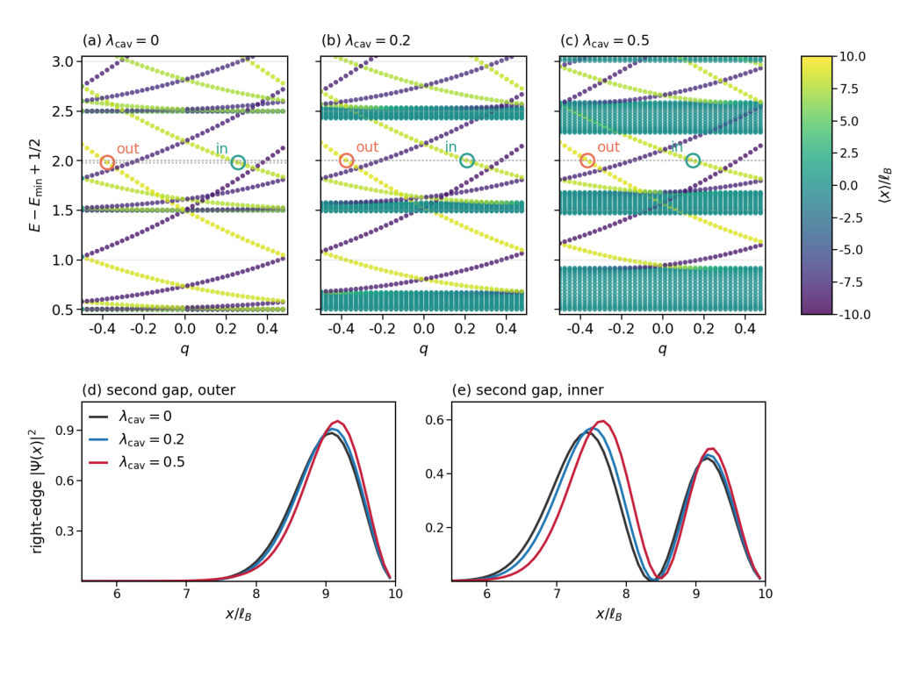
<figcaption class="paper-figure-caption"><b>Fig 3.</b> FIG. 3. Second-gap reduced-zone spectra and right-edge profiles. Panels (a)–(c): reduced-zone dispersions at E−Emin+1/2 = 2 for λcav = 0, 0.2, and 0.5. Orange and green circles mark the outer and inner right-edge branches used below. Panels (d)–(e): right-edge |Ψ(x)|2 at x ∈[5.5, 10]ℓB for those two branches, with λcav = 0 (black), 0.2 (blue), and 0.5 (red).</figcaption>
</figure>
<figure class="paper-figure-card">
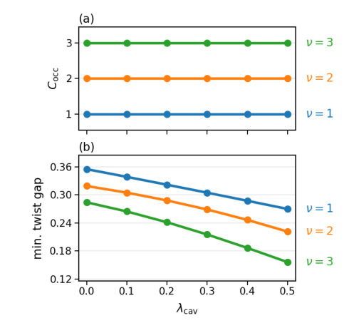
<figcaption class="paper-figure-caption"><b>Fig 4.</b> FIG. 4. Occupied-subspace Chern numbers Cocc (a) and min- imum direct gaps over the twist grid (b) versus λcav. The cal- culation uses Nx × Ny = 16 × 8, flux ϕ = 1/16 per plaquette, k0a = π/4, rω = 5, and a 15 × 15 twist grid. The first three Chern numbers remain Cν = ν. The gaps decrease monoton- ically and none closes. A 21 × 21 twist grid yields the same integers.</figcaption>
</figure>
<figure class="paper-figure-card">
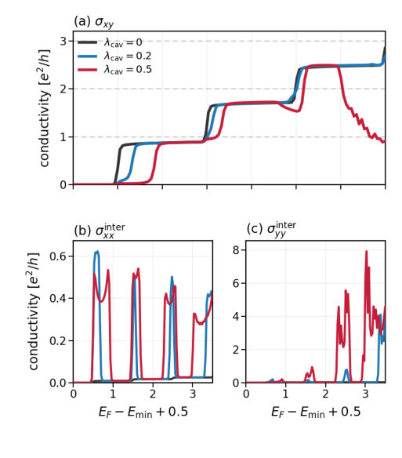
<figcaption class="paper-figure-caption"><b>Fig 5.</b> FIG. 5. Kubo conductivities versus band-minimum- referenced Fermi energy for λcav = 0, 0.2, and 0.5 at Lx = 20ℓB and η = 0.01ωB. Top: Hall conductivity σxy. Bottom left: transverse σinter xx , which is the complete σxx of the hard- wall strip. Bottom right: along-edge σinter yy , which omits the diagonal Drude weight. Hall steps shift with coupling, while the finite-width plateau values remain noninteger.</figcaption>
</figure>
</div>

<p><strong>Summary.</strong> This theoretical study examines how coupling a 2DEG in the quantum Hall regime to a structured cavity vacuum field reconstructs its Landau-level spectrum. The mechanism is identified as a finite-momentum ladder structure that redistributes edge states. Crucially, the analysis confirms that this reconstruction preserves the integer topological invariant (Chern number) while shifting transport energies.</p>
<p><strong>Why it may be interesting.</strong> This work provides a clean theoretical mechanism for how structured vacuum fields can engineer quantum Hall physics, offering insights into how cavity coupling modifies bulk and edge states without violating fundamental topological invariants.</p>
<details>
<summary>Detailed structure</summary>
<p><strong>Main problem.</strong> The study investigates how a structured vacuum field, mediated by a cavity, can reconstruct the Landau-level band structure and transport properties of a 2DEG in the integer quantum Hall regime.</p>
<p><strong>Main result.</strong> The reconstruction occurs via a spatially local, finite-$k_0$ momentum ladder mechanism, which redistributes chiral edge states without altering the integer Chern number topology of the occupied subspace.</p>
<p><strong>Method.</strong> The authors derived and diagonalized a gauge-complete single-particle Hamiltonian in the static, off-resonant limit, analyzing spectral and transport responses using strip geometry calculations.</p>
<p><strong>Model / system.</strong> The system is a 2DEG in the integer quantum Hall regime coupled to a single, spatially modulated cavity mode. The effective Hamiltonian retains both paramagnetic and diamagnetic contributions, leading to momentum transfers of $\pm 2k_0$.</p>
<p><strong>Key observables.</strong> Occupied-subspace Chern numbers ($C_
u$), Hall conductivity ($\sigma_{xy}$), and the spectral weight/band dispersions in the unfolded zone.</p>
<p><strong>Important parameters / regimes.</strong> The coupling strength ($\lambda_{	ext{cav}}$), the cavity wave vector ($k_0$), and the ratio $k_0\ell_B$ (which dictates the ladder's spectral resolution).</p>
<p><strong>Assumptions / limitations.</strong> The analysis relies on the static, off-resonant approximation ($\omega_{	ext{cav}} \gg \omega_B$) and is restricted to finite-width geometry calculations to analyze finite-size effects.</p>
<p><strong>Figures summary.</strong> Figures show spectral reconstruction in the unfolded zone, confirming replicas at $k \pm 2k_0, k \pm 4k_0, \dots$. They also plot the Chern number remaining constant and the Hall conductivity showing shifts due to the cavity coupling.</p>
<p><strong>Paper structure.</strong> The paper establishes the effective Hamiltonian by retaining gauge-invariant terms, analyzes the spectral consequences of the coupling via momentum ladder formation, and finally computes the topological invariants (Chern numbers) and transport responses (Kubo formulas) to confirm the reconstruction mechanism.</p>
</details>
<details>
<summary>Abstract</summary>
<p>We study a two-dimensional electron gas in the integer quantum Hall regime coupled to a single spatially modulated cavity mode in the static off-resonant limit. Retaining both paramagnetic and diamagnetic contributions on equal footing, we derive a gauge complete single-particle Hamiltonian in which virtual photon exchange generates a periodic kinetic renormalization and a diamagnetic scalar potential. Both terms transfer momentum by $2k_0$ and displace guiding centers by $ΔX=2k_0\ell_B^2$, forming a finite-$k_0$ momentum ladder. Diagonalizing the strip Hamiltonian, we find that the ladder reconstructs the Landau-level band structure and redistributes, rather than multiplies, the associated chiral edge states. Occupied-subspace Chern numbers remain $C_ν=ν$ for $ν=1,2,3$ throughout $0\leλ_{\mathrm{cav}}\le 0.5$, while the bulk gaps decrease without closing. Strip Kubo responses show cavity-induced displacements of the Hall-step energies; at finite width the plateau heights are noninteger and approach the integers as $L_x$ increases. The ladder is spectrally resolved at $k_0\ell_B=0.5$ and collapses at $k_0\ell_B=0.1$. These results isolate a spatially local, finite-$k_0$ momentum ladder as a clean-system mechanism by which a structured vacuum field reconstructs quantum Hall spectra and strip transport without changing the integer topology, complementary to cavity-mediated all-to-all hopping.</p>
</details>
<p><sub><a href="#top">↑ back to top</a></sub></p>

<p><a id="paper-2610.13193"></a></p>
<h3 id="equal-spin-local-and-nonlocal-andreev-reflection-in-altermagnetsuperconductoraltermagnet-junction"><a href="http://arxiv.org/abs/2610.13193v1">Equal-Spin local and nonlocal Andreev reflection in altermagnet/superconductor/altermagnet junction</a></h3>
<p><strong>Authors:</strong> Kai-Yi Lyu, Xing Wang, Yu-Xian Li<br>
<strong>Type:</strong> theory · <strong>Category:</strong> other · <strong>PDF:</strong> <a href="https://arxiv.org/pdf/2610.13193v1">https://arxiv.org/pdf/2610.13193v1</a><br>
<strong>Analysis basis:</strong> full PDF text, analyzed in chunks
<strong>Topic relevance:</strong> <code>Keldysh / 2PI / non-Gaussian methods</code> <strong>3/5</strong> · <code>methods for driven-dissipative</code> <strong>2/5</strong></p>
<div class="figure-strip-hint">↔ Scroll figures horizontally</div>
<div class="paper-figures-scroll">
<figure class="paper-figure-card">
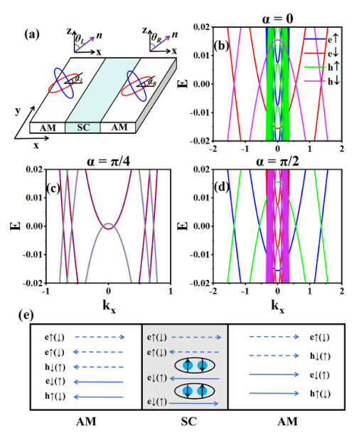
<figcaption class="paper-figure-caption"><b>Fig 1.</b> FIG. 1. (a) Schematic of the AM/SC/AM junction. The central region is an s-wave superconducting region. The two ellipses represent the Fermi surfaces of electrons with opposite spins in the AM region: the blue (red) ellipse corresponds to spin-up (spin-down) electrons. The orientation angle of the AM is defined by α relative to the x axis. The N´eel vector n lies in the x–z plane and forms an angle θL(R) with the z axis. Band structures of the AM at θL(R) = 0 for different orientation angles α: (b) αL(R) = 0, (c) αL(R) = π/4, and (d) αL(R) = π/4. Blue and red lines denote spin-up and spin-down electron bands, while green and purple lines represent spin-up and spin-down hole bands,...</figcaption>
</figure>
<figure class="paper-figure-card">
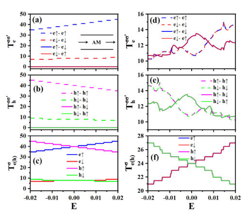
<figcaption class="paper-figure-caption"><b>Fig 2.</b> FIG. 2. Transmission channels in the AM nanoribbon at a fixed orientation angle α = 0. The inset in (a) shows a schematic of an AM nanoribbon. The channels correspond to spin-dependent electron–electron and hole–hole transmis- sion processes (equal-spin and spin-flip), shown for different N´eel vector angles: (a)-(c) θ = 0 and (d)-(f) θ = π/2, respec- tively.</figcaption>
</figure>
<figure class="paper-figure-card">
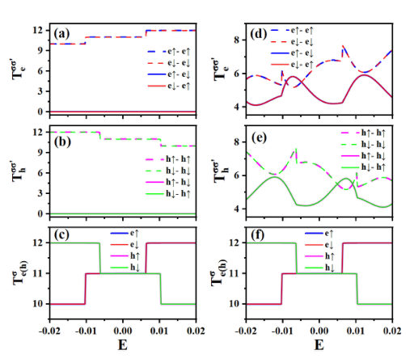
<figcaption class="paper-figure-caption"><b>Fig 3.</b> FIG. 3. Spin-dependent transmission channels for electrons and holes in the AM nanoribbon at a fixed orientation angle α = π/4, shown for different N´eel vector angles: (a)-(c) θ = 0 and (d)-(f) θ = π/2. The channels include electron–electron and hole–hole transmission processes with both equal-spin and spin-flip components.</figcaption>
</figure>
<figure class="paper-figure-card">

<figcaption class="paper-figure-caption"><b>Fig 4.</b> FIG. 4. Transmission channels in the AM nanoribbon at a fixed orientation angle α = 0. The channels characterize the spin character of electron–electron and hole–hole transmis- sion, including both equal-spin and spin-flip processes. Re- sults are shown for different N´eel vector angles: (a)-(c) θ = 0 and (d)-(f) θ = π/2, respectively.</figcaption>
</figure>
<figure class="paper-figure-card">

<figcaption class="paper-figure-caption"><b>Fig 5.</b> FIG. 5. (a), (b) display the TLAR and TCAR for αL = 0 and αR = 0. (c), (d) correspond to αL = 0 and αR = π/4, while (e), (f) show αL = 0 and αR = π/2. Dashed (solid) lines indicate conventional (equal-spin) AR. The N´eel vector angles are fixed at θL = 0 and θR = 0.</figcaption>
</figure>
</div>

<p><strong>Summary.</strong> This theoretical work examines Andreev reflection in AM/SC/AM junctions, focusing on how spin-dependent transport is controlled by magnetic order. The key finding is that rotating the Néel vector is the direct cause of equal-spin AR. This mechanism offers a pathway to engineer spin-dependent superconducting properties in magnetic heterojunctions.</p>
<p><strong>Why it may be interesting.</strong> The study provides a clear mechanism (Néel vector rotation) to engineer specific superconducting transport phenomena (equal-spin AR) in magnetic heterostructures, which is highly relevant for spintronics and superconducting quantum devices.</p>
<details>
<summary>Detailed structure</summary>
<p><strong>Main problem.</strong> The study investigates the equal-spin Andreev reflection (AR) phenomenon in an altermagnet/superconductor/altermagnet (AM/SC/AM) junction.</p>
<p><strong>Main result.</strong> Equal-spin AR is shown to be directly caused by the rotation of the Néel vector in the altermagnet, enabling orientation-dependent superconducting transport.</p>
<p><strong>Method.</strong> The analysis employs the Bogoliubov–de Gennes (BdG) formalism combined with the Landauer–Büttiker formula and non-equilibrium Green's functions.</p>
<p><strong>Model / system.</strong> The physical system is an AM/SC/AM junction, where the AM is modeled using a tight-binding Hamiltonian dependent on the crystal orientation angle ($\alpha$) and the Néel vector angle ($   heta$).</p>
<p><strong>Key observables.</strong> Local and crossed Andreev reflection coefficients ($T_{LAR}, T_{CAR}$), and the emergence of equal-spin AR channels.</p>
<p><strong>Important parameters / regimes.</strong> Crystal orientation angle ($\alpha$), Néel vector angle ($  heta$), and incident energy ($E$).</p>
<p><strong>Assumptions / limitations.</strong> The analysis assumes idealized high-transparency AM/SC interfaces without additional disorder.</p>
<p><strong>Figures summary.</strong> Figures illustrate band structures showing spin-dependent channels based on $\alpha$, and plots show the dependence of AR coefficients on the Néel vector angle ($ heta_R$), demonstrating the transition from conventional to equal-spin AR.</p>
<p><strong>Paper structure.</strong> The paper systematically analyzes the theoretical framework, first establishing the role of $\alpha$ in spin-dependent channels, then demonstrating that Néel vector rotation ($   heta$) induces spin-flip processes necessary for equal-spin AR, culminating in quantitative analysis of AR coefficients vs. $   heta$.</p>
</details>
<details>
<summary>Abstract</summary>
<p>We investigated the equal-spin Andreev reflection phenomenon in an altermagnet/super-conductor/altermagnet (AM/SC/AM) junction, focusing on the roles of the crystal orientation angle and the Néel vector. The crystal orientation angle in the AM effectively determines the spin-dependent transport channels for both electrons and holes, leading to orientation-dependent local and crossed Andreev reflection in the AM/SC/AM junction. We studied how and under what conditions this equal-spin Andreev reflection occurs. Rotating the Néel vector in the AM substantially increases spin-flip channels for both electrons and holes, giving rise to equal-spin Andreev reflection. When the Néel vector $θ=π/2$, the spin-dependent transmission channels for crystal orientations $α=0$ and $α=π/2$ are completely the same, the Andreev reflection coefficients remain different, reflecting the distinct roles of the Néel vector in spin space and the crystal orientation in real space. By tuning the crystal orientation angle and the Néel vector, orientation-dependent conventional and equal-spin Andreev reflection can be realized. This study reveals that Néel vector rotation is the direct cause of equal-spin Andreev reflection in AM/SC/AM junctions and provides a viable pathway for realizing spin-dependent superconducting transport phenomena in AM heterojunctions.</p>
</details>
<p><sub><a href="#top">↑ back to top</a></sub></p>

<p><a id="paper-2610.13825"></a></p>
<h3 id="phononic-frequency-combs-in-twisted-bilayer-transition-metal-dichalcogenide-heterostructures-from-first-principles"><a href="http://arxiv.org/abs/2610.13825v1">Phononic Frequency Combs in Twisted Bilayer Transition Metal Dichalcogenide Heterostructures from First Principles</a></h3>
<p><strong>Authors:</strong> Naman Arora, Adarsh Ganesan<br>
<strong>Type:</strong> theory · <strong>Category:</strong> other · <strong>PDF:</strong> <a href="https://arxiv.org/pdf/2610.13825v1">https://arxiv.org/pdf/2610.13825v1</a><br>
<strong>Analysis basis:</strong> full PDF text, analyzed in chunks
<strong>Topic relevance:</strong> <code>analog quantum simulation</code> <strong>2/5</strong> · <code>driven-dissipative phase transition</code> <strong>2/5</strong> · <code>Frenkel-Kontorova</code> <strong>1/5</strong> · <code>Keldysh / 2PI / non-Gaussian methods</code> <strong>1/5</strong> · <code>correlated / nonlocal dissipation</code> <strong>1/5</strong> · <code>methods for driven-dissipative</code> <strong>1/5</strong> · <code>non-equilibrium universality</code> <strong>1/5</strong> · <code>scars &amp; prethermalization</code> <strong>1/5</strong></p>
<div class="figure-strip-hint">↔ Scroll figures horizontally</div>
<div class="paper-figures-scroll">
<figure class="paper-figure-card">

<figcaption class="paper-figure-caption"><b>Fig 1.</b> FIG. 1. Relaxed √</figcaption>
</figure>
<figure class="paper-figure-card">

<figcaption class="paper-figure-caption"><b>Fig 2.</b> FIG. 2. Phononic frequency combs in the two heterostructures at the same drive, f0 = 1186 fth. (a) MoS2/WSe2; (b) MoS2/MoSe2. In each, upper panels show the time-domain displacement of the driven mode (blue) and of the parametrically excited mode (orange); lower panels show the corresponding spectra about ω1 and ω2, with the mode frequencies marked by dashed lines. The envelope modulation in the time domain is the beating of the comb teeth against one another.</figcaption>
</figure>
<figure class="paper-figure-card">

<figcaption class="paper-figure-caption"><b>Fig 3.</b> FIG. 3. Drive sweeps of the two heterostructures, with drive in units of fth for each compound. (a) MoS2/WSe2; (b) MoS2/MoSe2. In each, from top: root-mean-square amplitude of the parametrically excited mode (X2), comb tooth count in mode 1 and in mode 2, and root-mean-square amplitude of the driven mode (X1). The dashed line marks comb onset and the dotted line comb death, which is not reached within the MoS2/MoSe2 sweep. All quantities change discontinuously at onset, identifying it as a subcritical transition.</figcaption>
</figure>
<figure class="paper-figure-card">

<figcaption class="paper-figure-caption"><b>Fig 4.</b> FIG. 4. Spectral entropy (upper trace of each panel) and envelope variance of the driven mode (lower trace) against drive. (a) MoS2/WSe2; (b) MoS2/MoSe2. Shaded bands mark the detected regimes; the dash-dotted line marks the entropy maximum, the dashed line comb onset and the dotted line comb death (MoS2/WSe2 only). In both compounds the entropy maximum precedes the onset, at which the entropy falls and the variance jumps to its plateau.</figcaption>
</figure>
</div>

<p><strong>Summary.</strong> This work uses first-principles DFT calculations to model phononic frequency combs in twisted TMD heterostructures. By calculating the full anharmonic coupling parameters, the authors predict the precise conditions—including the drive strength threshold—under which these spectral combs form. This provides a powerful, predictive tool for designing novel quantum materials based on lattice dynamics.</p>
<p><strong>Why it may be interesting.</strong> The study models non-linear energy transfer in lattice vibrations, which is a key concept in open quantum systems and nonlinear dynamics. The use of first-principles methods to derive coupling parameters is highly relevant for designing quantum materials.</p>
<details>
<summary>Detailed structure</summary>
<p><strong>Main problem.</strong> To predict a priori whether a given crystal can support a phononic frequency comb and to determine the required drive strength, overcoming previous limitations where coupling strengths were treated as free parameters.</p>
<p><strong>Main result.</strong> The study successfully predicts comb generation in twisted TMD heterostructures, showing that the comb excitation threshold is set by the quality factors of the signal modes, and that the comb behavior is strongly chemistry dependent.</p>
<p><strong>Method.</strong> The authors used Density Functional Theory (DFT) to calculate the complete parameter set, including second- and third-order force constants, which were then used to solve coupled, non-linear two-mode differential equations.</p>
<p><strong>Model / system.</strong> The system is a twisted bilayer heterostructure of Transition Metal Dichalcogenides (TMDs), specifically MoS2/WSe2 and MoS2/MoSe2, forming a moiré supercell. The physics is modeled by the energy transfer between two coupled vibrational modes exhibiting an approximate 2:1 internal resonance.</p>
<p><strong>Key observables.</strong> Comb tooth count, envelope variance, spectral entropy, and the comb excitation threshold (f_th).</p>
<p><strong>Important parameters / regimes.</strong> The resonance ratio (omega_1/omega_2 ≈ 1.99), the quality factors (Q_2), and the anharmonic coupling constants (kappa_12, kappa_22).</p>
<p><strong>Assumptions / limitations.</strong> The analysis is limited to a two-mode reduction, and the calculation of linewidths relies on random displacement sampling for third-order force constants, which is noted as a potential source of systematic error.</p>
<p><strong>Figures summary.</strong> The notes mention Figure 4 showing spectral entropy and envelope variance versus drive for both heterostructures, and Table II quantitatively comparing comb characteristics between the two compounds.</p>
<p><strong>Paper structure.</strong> The paper establishes the physical problem (predicting comb existence), details the first-principles methodology (DFT for force constants), presents the theoretical model (two-mode coupled equations), and concludes by comparing the results for the two different TMD bilayers.</p>
</details>
<details>
<summary>Abstract</summary>
<p>Phononic frequency combs are equidistant spectral ladders generated when a driven vibrational mode transfers energy to an autoparametrically excited subharmonic mode through anharmonic intermode coupling. In previous studies, the coupling strength governing this energy transfer has typically been treated as a free parameter, extracted from a fabricated device, or adopted from an earlier calculation for a specific mode pair. As a result, whether a given crystal can support a phononic frequency comb, and the drive strength required to generate it, has not been predictable a priori. Here we obtain the complete parameter set from density functional theory. Twisted bilayers of \MoSSe{} and \MoSMoSe{} at the commensurate angle $21.787^{\circ}$ adopt space group $P3$ in a 42-atom \rootseven{} moiré supercell. The second-order force constants provide the mode frequencies; the third-order constants provide the linewidths through the Boltzmann transport equation and hence the quality factors; and the same third-order tensor projected onto the phonon eigenvectors of a chosen mode pair provides the anharmonic couplings $\kt$ and $\kss$. Both bilayers constitute a mode pair within $0.8\%$ of the $2\!:\!1$ resonance with $ω_1/ω_2 = 1.9923$ in \MoSSe{} and $1.9943$ in \MoSMoSe{}. By integrating the resulting two-mode equations, both modes generate combs through a discontinuous transition: at $701\,\fth$ in \MoSSe{} the envelope variance rises from $2.1\times10^{3}$ to $1.37\times10^{4}$ and the tooth count of mode 1 from 7 to 16 within a single $5\,\fth$ increment, identifying the onset as subcritical. The spectral entropy peaks \emph{before} this jump, at $341\,\fth$. The two compounds carry comparable coupling, differing by a factor of $1.2$. However, the comb excitation threshold is set by the quality-factors of signal modes: $Q_2 = 672$ for \MoSSe{} and $Q_2 = 3844$ for \MoSMoSe{}.</p>
</details>
<p><sub><a href="#top">↑ back to top</a></sub></p>

<p><a id="paper-2610.13383"></a></p>
<h3 id="pulse-by-pulse-imaging-of-reversible-collective-reshaping-in-laser-excited-gold-nanorods"><a href="http://arxiv.org/abs/2610.13383v1">Pulse-by-pulse imaging of reversible, collective reshaping in laser-excited gold nanorods</a></h3>
<p><strong>Authors:</strong> Mees Dieperink, Loriane Monin, Ichiro Ohnishi, Takeo Sasaki, Yu Jimbo, Erik Garnett, Wiebke Albrecht<br>
<strong>Type:</strong> experiment · <strong>Category:</strong> other · <strong>PDF:</strong> <a href="https://arxiv.org/pdf/2610.13383v1">https://arxiv.org/pdf/2610.13383v1</a><br>
<strong>Analysis basis:</strong> full PDF text, analyzed in chunks
<strong>Topic relevance:</strong> <code>driven-dissipative phase transition</code> <strong>1/5</strong> · <code>non-equilibrium universality</code> <strong>1/5</strong> · <code>quantum measurements</code> <strong>1/5</strong></p>
<div class="figure-strip-hint">↔ Scroll figures horizontally</div>
<div class="paper-figures-scroll">
<figure class="paper-figure-card">

<figcaption class="paper-figure-caption"><b>Fig 1.</b> Fig. 1 Experimental platform and before – after response to pulsed optical excitation. (a) A schematic drawing of light-incoupling into a TEM column. (b) Schematic of the pulse-synchronized TEM imaging scheme: each 400 µs laser pulse is embedded in a 40 ms camera frame, enabling single- pulse structural snapshots. The laser pulse length is indicated in green. The resulting temperature increase and decay in time that the particles consequently experience is plotted in red (see Fig. S4 for zoom in). (c) Last stable frame before the start of the optical excitation, showing the initial mor- phology of the nanorod cluster. (d) Final frame after prolonged pulsed illumination, demonstrating that...</figcaption>
</figure>
<figure class="paper-figure-card">

<figcaption class="paper-figure-caption"><b>Fig 2.</b> Fig. 2 Pulse-resolved evolution of twinning and collective structural reorganization. (a) Early-stage twinning: a single rod exhibits a distinct {111}-type twin boundary. (b) Intermediate stage: twin boundaries appear in adjacent rods, indicating localized crystallographic alignment. (c) Late stage: extended regions of the cluster share similarly oriented twinning defects, demonstrating large-scale structural reorientation consistent with highly mobile atoms during pulsed excitation. (d) Particle deformation after twinning. (e,f Particle disappearance. (g) Relative timing of frames during experi- ment (colors correspond to a-f).</figcaption>
</figure>
<figure class="paper-figure-card">

<figcaption class="paper-figure-caption"><b>Fig 3.</b> Fig. 3 Quantitative analysis of pulse-to-pulse reshaping dynamics in an isolated nanorod. (a) Tip- asymmetry signal over a short time window showing alternating positive and negative excursions. Insets show corresponding TEM frames revealing intermediate morphologies. (b) Tip-asymmetry signal over the full experiment, demonstrating sustained high-amplitude fluctuations indicating per- sistent structural mobility. (c) Switching rate extracted from the asymmetry signal, showing an initial rise followed by saturation at ˜20 switches/s. A switch is counted when the asymmetry leaves the noise band with the opposite sign to the previous excursion, that is, when the direction of tip-to-tip...</figcaption>
</figure>
<figure class="paper-figure-card">

<figcaption class="paper-figure-caption"><b>Fig 4.</b> Fig. 4 Coupled reshaping and dynamical arrest in a nanorod pair. (a) Full-range evolution of the NR 12 asymmetry signal, showing a transition to dynamical arrest following a mass-transfer event (red line). (b) Full-range asymmetry signal for NR 19 displaying the same immobilization behavior. (c) Short-window tip-asymmetry signal for NR 12, revealing rapid directional reshaping. (d) TEM zoom-ins of NR 12 and NR 19 corresponding to the times highlighted in panel (c). (e) Short-window tip-asymmetry signal for NR 19 showing correlated dynamics with NR 12</figcaption>
</figure>
<figure class="paper-figure-card">

<figcaption class="paper-figure-caption"><b>Fig 5.</b> Fig. 5 Long-range coupled reshaping and reversible disappearance – reappearance dynamics. (a) TEM zoom-ins showing two widely separated nanorods (NR 17 and NR 18) undergoing coordinated reshaping despite multiple intervening rods. (b) Total projected-area traces for NR 17 and NR 18 over time, revealing complementary behavior indicative of long-range mass redistribution. (c) Projected- area trace for NR 11, exhibiting repeated disappearance and reappearance. (d) Corresponding TEM zoom-ins showing intermediate states and the robust reformation of the original rod-like morphology.</figcaption>
</figure>
</div>

<p><strong>Summary.</strong> Researchers used pulse-synchronized in situ TEM to observe gold nanorods undergoing structural changes in real-time under pulsed laser excitation. They revealed a highly dynamic, correlated reshaping process exhibiting a structural memory. This technique establishes a new platform for controlling and understanding light-induced structural changes in nanomaterials.</p>
<p><strong>Why it may be interesting.</strong> The ability to resolve non-equilibrium structural dynamics event-by-event using pulsed light offers a powerful experimental tool for studying energy deposition and structural evolution in nanoscale systems, relevant to ultrafast energy transfer and phase transitions.</p>
<details>
<summary>Detailed structure</summary>
<p><strong>Main problem.</strong> To resolve the spatiotemporal dynamics of structural transformations in nanomaterials driven by pulsed light, moving beyond simple before-and-after snapshots.</p>
<p><strong>Main result.</strong> The system enters an unexpectedly dynamic regime exhibiting correlated, partly reversible restructuring, demonstrating a structural memory through repeated recovery of original shapes.</p>
<p><strong>Method.</strong> The study uses pulse-synchronized in situ Transmission Electron Microscopy (TEM) to capture structural snapshots frame-by-frame during pulsed optical excitation.</p>
<p><strong>Model / system.</strong> The physical system is gold nanorods (AuNRs) excited by a modulated CW laser tuned near the longitudinal Localized Surface Plasmon Resonance (LSPR). The analysis tracks structural changes like material redistribution and twin boundary nucleation.</p>
<p><strong>Key observables.</strong> Structural state captured frame-by-frame, material redistribution, nucleation/propagation of twin boundaries, structural memory, and tip-asymmetry signal.</p>
<p><strong>Important parameters / regimes.</strong> Peak temperature ($\sim 1115$ K), pulse duration ($400 \mu$s), and inter-pulse time ($40$ ms).</p>
<p><strong>Assumptions / limitations.</strong> The analysis assumes the cooling time is much shorter than the inter-pulse time, validating independent excitation events; volume change quantification is estimated from projected areas.</p>
<p><strong>Figures summary.</strong> Figures illustrate the experimental setup, pulse-resolved evolution of twinning and collective reorganization, and difference maps showing material gain or loss between pulses.</p>
<p><strong>Paper structure.</strong> The paper progresses from establishing the novel pulse-synchronized TEM platform to detailing the observation of dynamic regimes, analyzing collective vs. isolated rod behavior, and finally comparing observed mass transport scales to theoretical diffusion limits.</p>
</details>
<details>
<summary>Abstract</summary>
<p>Nanomaterial properties are governed by atomic structure, and driving structural changes on demand could enable materials with programmable properties. Pulsed light is the most controllable route: wavelength, fluence, polarization and pulse timing can each be tuned to inject energy with nanometre and picosecond precision and mould atomic positions. Yet the spatiotemporal dynamics of these transformations have remained hidden, inferred only from before-and-after snapshots. Here we track gold nanorods in a transmission electron microscope under pulsed optical excitation, quantifying the structural transition frame by frame. The rods enter an unexpectedly dynamic regime: material redistributes within and between particles, twin boundaries nucleate and propagate, rods hundreds of nanometres apart reshape in concert, and individual rods almost vanish before recovering their original shape, indicating a structural memory. Driving and following these transformations with pulse-synchronized in situ electron microscopy could turn light-induced reshaping into a tool for setting structure, and consequently properties, on demand.</p>
</details>
<p><sub><a href="#top">↑ back to top</a></sub></p>

<p><a id="paper-2610.12714"></a></p>
<h3 id="electron-binding-by-charge-disorder-surrounding-gapped-bilayer-graphene"><a href="http://arxiv.org/abs/2610.12714v1">Electron binding by charge disorder surrounding gapped bilayer graphene</a></h3>
<p><strong>Authors:</strong> Jude McClay, Angelika Knothe, Igor Rozhansky, Vladimir Fal'ko<br>
<strong>Type:</strong> theory · <strong>Category:</strong> disordered systems and neural networks · <strong>PDF:</strong> <a href="https://arxiv.org/pdf/2610.12714v1">https://arxiv.org/pdf/2610.12714v1</a><br>
<strong>Analysis basis:</strong> full PDF text, analyzed in chunks
<strong>Topic relevance:</strong> <code>Keldysh / 2PI / non-Gaussian methods</code> <strong>1/5</strong></p>
<div class="figure-strip-hint">↔ Scroll figures horizontally</div>
<div class="paper-figures-scroll">
<figure class="paper-figure-card">

<figcaption class="paper-figure-caption"><b>Fig 1.</b> FIG. 1. Two charge-disorder regimes in gapped BLG; Eb is the binding energy and Eg the spectral gap. (a) hBN- encapsulated BLG, relevant to gate-defined quantum dots, with ε = 4.5 for hBN. The interlayer potential difference ∆ is gate controlled; the lower panel shows Eb/Eg versus ∆ and the impurity distance from the nearest graphene layer. (b) Double ionic gating. The mean ion density n controls the displacement field and the corresponding self-consistent ∆. For an effective bound-state radius r, N r = πnr2 is the mean number of ions on one interface within the bound-state area, while Q is the magnitude of the local fluctuation in the difference between the ion numbers on the two...</figcaption>
</figure>
<figure class="paper-figure-card">

<figcaption class="paper-figure-caption"><b>Fig 2.</b> FIG. 2. Screening shifts bound levels towards the band edges. The valley-K spectrum is shown for an impurity 1 nm from the nearest graphene layer. The left plot uses the external potential only; the middle plots show representative bound-state probability densities with different spatial symmetries at ∆= 100 meV; the right plot includes out-of-plane and in-plane RPA screening. Solid and dashed curves correspond to impurities above and below the bilayer, respectively; the continua are shaded grey. The inset compares the ionic displacement-field contribution (first term of Eq. 7), the self-consistent ∆, and Eg for double ionic gating.</figcaption>
</figure>
<figure class="paper-figure-card">

<figcaption class="paper-figure-caption"><b>Fig 3.</b> FIG. 3. Binding weakens with impurity–bilayer separation and screening. Valley-K spectra are shown for impurity dis- tances of 10 nm (a,b), 2 nm (c,d), and 0.5 nm (e,f) from the nearest layer. Left: external potential only; right: out-of- plane and in-plane RPA screening. Solid and dashed lines correspond to impurities above and below the bilayer; colours distinguish ¯m = +1, 0, −1.</figcaption>
</figure>
<figure class="paper-figure-card">

<figcaption class="paper-figure-caption"><b>Fig 4.</b> FIG. 4. With screening, bound states remain shallow over most of the parameter range. (a) Binding energy Eb and (b) radius r versus ∆and impurity distance |z0| −d/2 from the nearest graphene layer.</figcaption>
</figure>
<figure class="paper-figure-card">

<figcaption class="paper-figure-caption"><b>Fig 5.</b> FIG. 5. The temperature Tf at which the ionic configura- tion freezes sets the characteristic ionic-charge fluctuation QT through the charging-energy condition Ech(QT ) = kBTf. For ions 0.5 nm from the nearest graphene layer, (a) the mean ion count N r at Q = 1, (b) Eb at QT , and (c) Eb/Eg are shown versus n and the polymer-matrix dielectric constant ε. Panels (b,c) compare Tf = 100, 300, and 500 K.</figcaption>
</figure>
</div>

<p><strong>Summary.</strong> This paper theoretically examines how charge disorder affects the electronic band structure of gapped bilayer graphene under different environmental conditions. By modeling screening effects, the authors find that disorder-induced bound states remain shallow, suggesting that transport in these materials is dominated by weak scattering rather than deep localization.</p>
<p><strong>Why it may be interesting.</strong> The work provides quantitative predictions on how disorder affects electronic states in 2D materials, which is crucial for designing functional quantum devices where disorder mitigation is key.</p>
<details>
<summary>Detailed structure</summary>
<p><strong>Main problem.</strong> The study investigates how charge disorder within the dielectric environment modifies the band-edge states of gapped bilayer graphene (BLG) by inducing electron and hole binding to Coulomb centers.</p>
<p><strong>Main result.</strong> The research concludes that in both hBN-encapsulated and ionically gated regimes, charge disorder does not create deep midgap states, keeping bound states close to the conduction and valence band edges.</p>
<p><strong>Method.</strong> The analysis employs theoretical modeling using the full four-band Slonczewski–Weiss–McClure Hamiltonian, incorporating both out-of-plane and in-plane dielectric screening via the Random-Phase Approximation (RPA).</p>
<p><strong>Model / system.</strong> The system is gapped bilayer graphene (BLG) whose electronic properties are tuned by electrostatic means (hBN encapsulation or ionic gating). The model accounts for the complex dielectric response of the surrounding environment.</p>
<p><strong>Key observables.</strong> Binding energy ($E_b$), the spectral gap ($E_g$), and the ratio $E_b/E_g$ are the primary diagnostics used to characterize the localized states.</p>
<p><strong>Important parameters / regimes.</strong> Key parameters include the band gap ($\Delta$), the impurity distance ($z_0$), the dielectric constant ($\epsilon$), and the freezing temperature ($T_f$) for ionic gating.</p>
<p><strong>Assumptions / limitations.</strong> The analysis assumes that for high ion densities, localization is governed by fluctuations in ion density rather than individual ions, and that inter-valley mixing is negligible.</p>
<p><strong>Figures summary.</strong> Figures illustrate the binding energy ratio ($E_b/E_g$) dependence on gap tuning and impurity distance, and show how screening shifts bound levels towards the band edges.</p>
<p><strong>Paper structure.</strong> The paper systematically analyzes two distinct charge disorder regimes—hBN encapsulation and ionic gating—using a unified theoretical framework that includes full Hamiltonian modeling and RPA screening calculations.</p>
</details>
<details>
<summary>Abstract</summary>
<p>Bilayer graphene (BLG) is a unique electronic material offering electrostatic tunability of its band gap. Here, we study how charge disorder in the dielectric environment modifies band-edge states by binding electrons and holes to Coulomb centres, taking into account the in- and out-of-plane dielectric response of Bernal bilayers. We apply this framework to (a) hBN-encapsulated medium-size-gap BLG used for gate-defined quantum dots, and (b) BLG under double n/p ionic gating. In hBN/BLG/hBN, we find that single remote charges produce only weakly bound states, with binding energies generally small compared with the BLG gap. Under ionic gating, we find that the bound states are too large to be trapped by individual ions -- localisation arises from fluctuations in the ion density, whose magnitude is limited by Coulomb charging energy at the freezing temperature $T_f$ of the ionic configuration. Thus, in both regimes, charge disorder does not produce deep midgap states, with the bound states remaining closer to the conduction and valence band edges.</p>
</details>
<p><sub><a href="#top">↑ back to top</a></sub></p>

<p><a id="paper-2610.12563"></a></p>
<h3 id="enhanced-coulomb-pseudopotentials-in-high-pressure-hydrides-from-first-principles"><a href="http://arxiv.org/abs/2610.12563v1">Enhanced Coulomb pseudopotentials in high-pressure hydrides from first principles</a></h3>
<p><strong>Authors:</strong> Kieran Bozier, Chris J. Pickard<br>
<strong>Type:</strong> theory · <strong>Category:</strong> strongly correlated electrons · <strong>PDF:</strong> <a href="https://arxiv.org/pdf/2610.12563v1">https://arxiv.org/pdf/2610.12563v1</a><br>
<strong>Analysis basis:</strong> full PDF text, analyzed in chunks
<strong>Topic relevance:</strong> <code>Keldysh / 2PI / non-Gaussian methods</code> <strong>1/5</strong></p>
<div class="figure-strip-hint">↔ Scroll figures horizontally</div>
<div class="paper-figures-scroll">
<figure class="paper-figure-card">

<figcaption class="paper-figure-caption"><b>Fig 1.</b> FIG. 1: Parity plot for the ambient pressure metallic elements, comparing the µ value calculated with the PBE functional in Mantel to those obtained in Ref. [30]. The grey region indicates a fractional difference within ±10%.</figcaption>
</figure>
<figure class="paper-figure-card">

<figcaption class="paper-figure-caption"><b>Fig 2.</b> FIG. 2: Comparison of impact of exchange-correlation potential on the µ value. The values are largely insensitive to the choice of functional, with discrepancies driven by changes in the electronic density of states at the Fermi level.</figcaption>
</figure>
<figure class="paper-figure-card">

<figcaption class="paper-figure-caption"><b>Fig 3.</b> FIG. 3: Periodic table of the ambient pressure metallic elements, with the value of Coulomb parameter µ given with the LDA, PBE and PBEsol functionals. The colour is set by the PBE value, shown in bold. The elements Cr to Ni are excluded due to their formation of magnetic ordering, which typically precludes conventional superconductivity. The LDA for La is omitted due to the lack of a pseudo-dojo pseudopotential.</figcaption>
</figure>
<figure class="paper-figure-card">

<figcaption class="paper-figure-caption"><b>Fig 4.</b> FIG. 4: Plots of the diagonal of the isoenergy averaged screened Coulomb interaction W(ε, ε). Data from Ref. [25] is shown in red and from this work in blue. The Fermi level is denoted by the dashed line. Note the different energy ranges for (b) and (d).</figcaption>
</figure>
<figure class="paper-figure-card">

<figcaption class="paper-figure-caption"><b>Fig 5.</b> FIG. 5: Comparison of a range of superconducting hydride systems. Each subfigure shows the density of states, the diagonal W(ε, ε) and horizontal W(ε, 0) cross sections, and a colourplot of the full matrix. The same colour range is used across all systems, illustrating the screened Coulomb matrix elements are strong for H3S, and weak for LaSc2H24.</figcaption>
</figure>
</div>

<p><strong>Summary.</strong> This work calculates the Coulomb pseudopotential ($\mu^*$) from first principles for superconducting hydrides under high pressure. By moving beyond empirical values, the authors show that strong Coulomb repulsion significantly suppresses the superconducting critical temperature ($T_c$). This provides a crucial, more accurate theoretical framework for predicting high-temperature superconductivity in these materials.</p>
<p><strong>Why it may be interesting.</strong> While focused on superconductivity, the rigorous, first-principles calculation of electron-electron interactions ($\mu$) and their impact on pairing mechanisms is highly relevant to understanding strongly correlated electron systems where simple models fail.</p>
<details>
<summary>Detailed structure</summary>
<p><strong>Main problem.</strong> Accurately determining the Coulomb pseudopotential ($\mu^*$) in the Eliashberg theory of superconductivity, as standard empirical values are insufficient for high-pressure hydrides.</p>
<p><strong>Main result.</strong> The authors find that strong Coulomb repulsions, quantified by $\mu^*_{	ext{ME}} \approx 0.39$ for $  ext{Mg}_2   ext{IrH}_6$, significantly suppress $T_c$ compared to standard estimates, resolving previous factor-of-two discrepancies.</p>
<p><strong>Method.</strong> First-principles calculations using the Random Phase Approximation (RPA) to evaluate the screened Coulomb interaction, followed by solving the Eliashberg equations in the variable density of states (vDOS) form.</p>
<p><strong>Model / system.</strong> The study focuses on superconducting hydrides ($    ext{H}_3    ext{S}$, $  ext{YSbH}_6$, $ ext{Mg}_2   ext{IrH}_6$) under high pressure, treating superconductivity via the electron-phonon coupling mechanism modified by Coulomb repulsion.</p>
<p><strong>Key observables.</strong> Superconducting critical temperature ($T_c$), Coulomb parameter ($\mu$), and Coulomb pseudopotential ($\mu^*_{	ext{ME}}$).</p>
<p><strong>Important parameters / regimes.</strong> High density of states at the Fermi energy ($N_F$), and the pressure range studied.</p>
<p><strong>Assumptions / limitations.</strong> The use of the Random Phase Approximation (RPA) for the screened Coulomb interaction and solving the Eliashberg equations using the vDOS form.</p>
<p><strong>Paper structure.</strong> The paper establishes the inadequacy of empirical $\mu^*$ values, presents the first-principles calculation methodology using RPA for the screened Coulomb interaction, and concludes by demonstrating that the calculated $\mu^*$ leads to a substantial suppression of $T_c$ in specific hydride systems.</p>
</details>
<details>
<summary>Abstract</summary>
<p>In the Eliashberg theory of superconductivity, Coulomb interactions oppose the phonon-mediated attraction and suppress the superconducting critical temperature $T_{\mathrm{c}}$. However, most first-principles predictions continue to treat this repulsion with an empirical Coulomb pseudopotential $μ^*_{\text{ME}}$ in the range 0.1-0.15. Here we present first-principles calculations of the Coulomb parameter $μ$ and pseudopotential $μ^*_{\text{ME}}$ in superconducting hydrides across a range of pressures. The screened Coulomb interaction is evaluated at the random phase approximation level with the Mantel code. We demonstrate that several hydride systems, including H$_3$S, YSbH$_6$ and Mg$_2$IrH$_6$, have strong Coulomb repulsions driven by a large density of states at the Fermi energy, $N_{\mathrm{F}}$. For Mg$_2$IrH$_6$ we obtain $μ=0.62$ and $μ^*_{\text{ME}}\approx0.39$, leading to a 40 K suppression in $T_{\mathrm{c}}$ relative to a standard $μ^*_{\text{ME}}=0.16$. Our obtained $μ^*_{\text{ME}}$ is far above the conventional range and, accounting for the energy dependence of the density of states, resolves the factor-of-two discrepancy between $T_{\mathrm{c}}$ estimates of previous studies. Across all systems and pressures studied, we find that $μ$ closely tracks $N_{\mathrm{F}}$, suggesting that commonly used $μ^*_{\text{ME}}$ values lead to overestimated $T_{\mathrm{c}}$ in materials where the density of states at the Fermi energy is large.</p>
</details>
<p><sub><a href="#top">↑ back to top</a></sub></p>

<p><a id="paper-2610.13542"></a></p>
<h3 id="giant-geometric-nonlinear-transport-in-inhomogeneously-strained-bimath1100mathsemath1101math-single-crystalline-slabs"><a href="http://arxiv.org/abs/2610.13542v1">Giant geometric nonlinear transport in inhomogeneously strained Bi$_2$Se$_3$ single crystalline slabs</a></h3>
<p><strong>Authors:</strong> Igor Veremchuk, Pavlo Makushko, Anita Guarino, Muhammad Waqee Ur Rehman, Rosalba Tatiana Fittipaldi, Tobias Kosub, Alexej Pashkin, Fabian Ganss, Oleg A. Petrenko, Proloy T. Das, Rui Xu, Rhonald Burgos Atencia, Debottam Mandal, Antonio Vecchione, Carmine Ortix, Denys Makarov<br>
<strong>Type:</strong> experiment · <strong>Category:</strong> other · <strong>PDF:</strong> <a href="https://arxiv.org/pdf/2610.13542v1">https://arxiv.org/pdf/2610.13542v1</a><br>
<strong>Analysis basis:</strong> full PDF text, analyzed in chunks
<strong>Topic relevance:</strong> <code>analog quantum simulation</code> <strong>1/5</strong></p>
<div class="figure-strip-hint">↔ Scroll figures horizontally</div>
<div class="paper-figures-scroll">
<figure class="paper-figure-card">

<figcaption class="paper-figure-caption"><b>Fig 1.</b> FIG. 1. Macroscopic Bi2Se3 single crystalline slab. (a) Schematics of Bi2Se3 crystal structure composed of quintuple layers (QL) that are interfaced by the vdW gaps. (b) Optical image of the pristine Bi2Se3 single crystal used in this study. The black dashed line indicates the orientation of one of the mirror planes of the Bi2Se3 crystal lattice and black dotted rectangle indicates the sample piece cut for transport measurements. (c) Schematics of the cleavage process. The mirror plane (indicated in blue) is oriented along the long side of the slab, which is repeatedly cleaved until the sample thickness is reduced to 200 µm. (d) SEM image of the side face of the cleaved Bi2Se3 single...</figcaption>
</figure>
<figure class="paper-figure-card">

<figcaption class="paper-figure-caption"><b>Fig 2.</b> FIG. 2. Electrical transport characterisation of Bi2Se3 single-crystalline slab. (a,b) Schematics of the Bi2Se3 crys- talline slab interfaced with 8 contacts for electrical transport measurements. The surface of the crystal is color coded representing the distribution of the electrical potential across the crystal under electrical current sourced along the (a) long and (b) short edge of the slab [see also Supplementary Fig. 10]. (c,d) The longitudinal and transversal voltages measured at 30 K at the (c,d) first harmonic and (e,f) second harmonic. Error bars denote standard error of the signal measured for 60 s. Lines in panels (e,f) are fits to the data accordingly to U 2ω ∝(Iω)2. (g)...</figcaption>
</figure>
<figure class="paper-figure-card">

<figcaption class="paper-figure-caption"><b>Fig 3.</b> FIG. 4. Scaling analysis of nonlinear responsivity of single crystalline Bi2Se3 slab. The variation of transversal nonlinear responsivity of the Bi2Se3 slabs with conductivity σ can be fitted with aσ2 + bσ function.</figcaption>
</figure>
</div>

<p><strong>Summary.</strong> Researchers demonstrated a giant geometric nonlinear transport effect in bulk, strained $  ext{Bi}_2   ext{Se}_3$ slabs, achieving a record-high nonlinear responsivity. This enhancement is attributed to classical nonlinear transport driven by macroscopic strain gradients, opening a new pathway for engineering nonlinear electronic materials relevant to energy harvesting.</p>
<p><strong>Why it may be interesting.</strong> While the focus is condensed matter transport, the study of macroscopic strain engineering to enhance nonlinear responses provides a powerful, non-quantum mechanism for controlling material properties, which has analogues in designing quantum devices.</p>
<details>
<summary>Detailed structure</summary>
<p><strong>Main problem.</strong> The goal is to maximize nonlinear responsivity for developing energy harvesters and frequency upconverters by studying nonlinear electrical transport in topological insulators.</p>
<p><strong>Main result.</strong> The study achieved a record-high nonlinear responsivity ($>10^4 \mu	ext{m}/	ext{V}$) in macroscopic, inhomogeneously strained $  ext{Bi}_2   ext{Se}_3$ slabs.</p>
<p><strong>Method.</strong> The enhancement is attributed to a classical geometric nonlinear transport effect ($    ext{gNLTE}$) driven by complex strain gradients within the bulk material, rather than purely quantum geometric effects.</p>
<p><strong>Model / system.</strong> The physical system is single crystalline, bulk topological insulator $ ext{Bi}_2   ext{Se}_3$ slabs, which are mechanically strained through cleavage, creating macroscopic strain gradients.</p>
<p><strong>Key observables.</strong> Nonlinear responsivity ($  ext{E}<em 2jj>{ij}/    ext{E}</em>$).}$), linear conductivity ($\sigma$), and rectified DC voltage ($  ext{U}_{    ext{RDC}</p>
<p><strong>Important parameters / regimes.</strong> Record-high responsivity of $10^4 \mu	ext{m}/	ext{V}$; strain gradients ranging from $-0.9\%$ to $+0.9\%$.</p>
<p><strong>Assumptions / limitations.</strong> The effect is argued to be purely classical and strain-driven, and that Joule heating effects can be excluded from the nonlinear signal.</p>
<p><strong>Figures summary.</strong> Figures illustrate the crystal structure, strain mapping via Raman spectroscopy, and electrical transport measurements showing second harmonic responses and rectified DC voltage.</p>
<p><strong>Paper structure.</strong> The paper details sample preparation and structural characterization (XRD, Raman) to confirm strain gradients, followed by electrical transport measurements (harmonic and DC voltage) to quantify the giant nonlinear responsivity and derive scaling laws.</p>
</details>
<details>
<summary>Abstract</summary>
<p>Electrical transport in non-centrosymmetric materials exhibits a nonlinear conductivity tensor component that generates second-harmonic voltages in response to applied electric fields. Harnessing this effect is essential for developing zero-threshold electromagnetic energy harvesters and broadband frequency upconverters, both of which require maximizing the nonlinear responsivity. Here, we demonstrate that inhomogeneously strained macroscopic slabs of the topological insulator Bi$_2$Se$_3$ achieve a record-high nonlinear responsivity of $10^4\,μ$m/V: a six orders of magnitude boost compared to its thin-film counterparts. We attribute this giant enhancement to a classical geometric nonlinear transport effect, which is driven by complex strain gradients within the bulk material. Notably, a similar geometric mechanism known as geometric nonlinear Hall was previously observed only in microscale-patterned structures. Our findings establish macroscopic strain engineering as a powerful route to enhance nonlinear transport, with immediate relevance to a broad class of layered systems, including transition metal dichalcogenides and moiré heterostructures.</p>
</details>
<p><sub><a href="#top">↑ back to top</a></sub></p>

<p><a id="paper-2610.12753"></a></p>
<h3 id="nonlocal-josephson-coupling-and-current-redistribution-in-a-large-area-graphene-multiterminal-josephson-junction"><a href="http://arxiv.org/abs/2610.12753v1">Nonlocal Josephson coupling and current redistribution in a large-area graphene multiterminal Josephson junction</a></h3>
<p><strong>Authors:</strong> Luojia Zhang, Kushagra Aggarwal, Jay D. Sau, Ethan G. Arnault, Kenji Watanabe, Takashi Taniguchi, Valla Fatemi<br>
<strong>Type:</strong> both · <strong>Category:</strong> other · <strong>PDF:</strong> <a href="https://arxiv.org/pdf/2610.12753v1">https://arxiv.org/pdf/2610.12753v1</a><br>
<strong>Analysis basis:</strong> full PDF text, analyzed in chunks
<strong>Topic relevance:</strong> <code>correlated / nonlocal dissipation</code> <strong>1/5</strong></p>
<div class="figure-strip-hint">↔ Scroll figures horizontally</div>
<div class="paper-figures-scroll">
<figure class="paper-figure-card">

<figcaption class="paper-figure-caption"><b>Fig 1.</b> FIG. 1. (a) Device structure of the Josephson Hall bar. (b) Optical image of the Josephson Hall bar with the mea- surement configuration. (c),(e) Differential resistance mea- sured under a source–drain bias I14, showing dV23/dI14 and dV14/dI14 in (c), and dV12/dI14 and dV34/dI14 in (e). Red dashed lines indicate the position of the NDLR. (d),(f) Cor- responding dc voltages V23 and V14 in (d), and V34 and V12 in (f), as functions of I14.</figcaption>
</figure>
<figure class="paper-figure-card">

<figcaption class="paper-figure-caption"><b>Fig 2.</b> FIG. 2. (a), (b) Measurement configuration for dV23/dI14 and dV14/dI14, respectively. (c), (d) dV23/dI14 and dV14/dI14 as a function of I14 and n. (e), (f) dV23/dI14 and dV14/dI14 as a function of I14 and TMXC, at a fixed density of 1×1012 cm−2. Panel (f) shows the expected critical current as a function of temperature for long (black dashed line) and short ballistic (green dashed line) junctions.</figcaption>
</figure>
<figure class="paper-figure-card">

<figcaption class="paper-figure-caption"><b>Fig 3.</b> FIG. 3. (a) Device measurement scheme (left) and extracted conductance matrix (right), where the thickness of the lines between nodes i and j is proportional to the conductance Gij. (b) Effective RSJ network model for the Josephson Hall bar device under dc I14 current bias. (c) Comparison of experimental data with simulation. Isw indicates the current at which the node pair 2-3 switches to a finite voltage state, and INDLR is the current at which the NDLR is maximized. (d) Equivalent circuits at different I14 regimes, color-coded as in (c). Blue indicates that the edge is superconducting, and red indicates that it is in a finite-voltage state. The critical-current parameters used in (c)...</figcaption>
</figure>
<figure class="paper-figure-card">

<figcaption class="paper-figure-caption"><b>Fig 4.</b> FIG. 4. (a)–(c) Differential resistance as a function of perpendicular magnetic field Bperp and current bias I14, measured across the global 1−4 response, the source-side 1−2 region, and the central 2−3 region, respectively. Arrows in (c) mark magnetic- field values where the NDLR is suppressed. (d) Schematic interpretation of the two magnetic-field-dependent superconducting contributions. Mode 1 represents a contact-adjacent contribution with a relatively well-defined interference area and sinc-like field dependence, while mode 2 represents an additional spatially extended contribution involving phase averaging over Andreev trajectories through the Hall-bar interior. (e) Normalized...</figcaption>
</figure>
</div>

<p><strong>Summary.</strong> This work investigates nonlocal superconducting transport in large-area graphene multiterminal Josephson junctions. By measuring the four-probe response, the authors observe a characteristic Negative Differential Longitudinal Resistance (NDLR). This effect is attributed to the collective interplay between nonlocal Josephson coupling and current redistribution within the network, highlighting the potential of these geometries for advanced nonlinear circuit applications.</p>
<p><strong>Why it may be interesting.</strong> The emergence of NDLR due to network-level current redistribution in a mesoscopic superconducting circuit provides a novel diagnostic tool for characterizing complex superconducting-semiconductor interfaces, relevant to open quantum systems.</p>
<details>
<summary>Detailed structure</summary>
<p><strong>Main problem.</strong> The research aims to explore physics beyond simple nearest-neighbor coupling in Multiterminal Josephson Junctions (MTJJs) by investigating nonlocal coupling effects in a large-area graphene platform.</p>
<p><strong>Main result.</strong> The key finding is the observation of a pronounced Negative Differential Longitudinal Resistance (NDLR) in the four-probe response, which arises from the interplay between nonlocal Josephson coupling and nonlocal normal-state current redistribution.</p>
<p><strong>Method.</strong> The study combines DC current bias measurements (four-probe configuration) with theoretical modeling using an effective Resistively Shunted Junction (RSJ) model applied to a conductance network.</p>
<p><strong>Model / system.</strong> The physical system is a Josephson Hall bar geometry realized in graphene, forming a multiterminal Josephson network. The model treats the junction as a coupled conductance network, allowing for the description of nonlocal coupling between distant terminals.</p>
<p><strong>Key observables.</strong> Negative Differential Longitudinal Resistance (NDLR) in the four-probe response, switching sequence of superconducting nodes, and the dependence of these features on carrier density and magnetic field.</p>
<p><strong>Important parameters / regimes.</strong> Micron-scale dimensions, superconducting gap ($\Delta$), carrier density (gate voltage), and applied magnetic field ($B_{\perp}$).</p>
<p><strong>Assumptions / limitations.</strong> The analysis often relies on extending analytical expressions derived for two-terminal junctions to the complex MTJJ geometry, and the full quantitative model must account for quasiparticle dynamics and distinct energy-phase relations in different channels.</p>
<p><strong>Figures summary.</strong> Figures illustrate the device structure, the observation of NDLR in $I-V$ and $V-I$ curves, and the magnetic field dependence showing multiple interference modes (sinc-like and Gaussian-like) governing the supercurrent flow.</p>
<p><strong>Paper structure.</strong> The paper progresses from establishing the physical platform (graphene MTJJ) to identifying the key non-local phenomenon (NDLR), modeling its origin through coupled nonlinear equations, and finally analyzing its robustness and magnetic field dependence across multiple measurement regions.</p>
</details>
<details>
<summary>Abstract</summary>
<p>Multiterminal Josephson junctions (MTJJs) extend conventional two-terminal Josephson physics to devices defined by multiple superconducting phases, where rich phenomena have been predicted. However, in conventional MTJJs, superconducting transport is often dominated by local coupling between neighboring leads, obscuring physics that goes beyond simple connectivity. Here, we realize a multiterminal Josephson network in a graphene Hall bar geometry with micron-scale dimensions, enabling substantial nonlocal coupling between distant terminals. Our key observation is a pronounced negative differential longitudinal resistance (NDLR) in the four-probe response near switching currents, while no such feature appears in two-terminal measurements. We reproduce the NDLR response with a network containing the interplay between two distinct forms of nonlocality: nonlocal Josephson coupling, which determines the switching sequence of the superconducting network, and nonlocal normal-state conductance, which redistributes current after different regions switch. Our results highlight the potential of the emergent NDLR for characterizing superconductor--semiconductor hybrid systems and for nonlinear circuits. Further, this Josephson Hall bar geometry provides a platform for exploring the interplay between mesoscopic superconductivity and many-body ground states in graphene-based heterostructures.</p>
</details>
<p><sub><a href="#top">↑ back to top</a></sub></p>
<h3 id="other-secondary-papers-6">Other secondary papers (6)</h3>
<details>
<summary>Show other secondary papers</summary>

<p><a id="paper-2610.13342"></a></p>
<h3 id="atomic-edge-resonators-flatten-phonon-bands-in-biphenylene-nanoribbons"><a href="http://arxiv.org/abs/2610.13342v1">Atomic Edge Resonators Flatten Phonon Bands in Biphenylene Nanoribbons</a></h3>
<p><strong>Authors:</strong> V. L. Katkov, N. M. Chtchelkatchev, V. A. Osipov<br>
<strong>Type:</strong> theory · <strong>Category:</strong> other · <strong>PDF:</strong> <a href="https://arxiv.org/pdf/2610.13342v1">https://arxiv.org/pdf/2610.13342v1</a><br>
<strong>Analysis basis:</strong> full PDF text, analyzed in chunks</p>
<div class="figure-strip-hint">↔ Scroll figures horizontally</div>
<div class="paper-figures-scroll">
<figure class="paper-figure-card">

<figcaption class="paper-figure-caption"><b>Fig 1.</b> Figure 2. Thermal band-edge shift ∆Eg(T) = Eg(T) −Eg(0) for (a) freestanding and (b) hBN-supported ribbons. Colors identify Nh. The reference Eg(0) includes zero-point renor- malization. For Nh = 7, 8, the curves track the change in band-edge separation after gap closure, rather than a finite insulating gap.</figcaption>
</figure>
<figure class="paper-figure-card">

<figcaption class="paper-figure-caption"><b>Fig 2.</b> Figure 1. Width-dependent band gap. Red and gold curves show the present static-lattice and zero-point-renormalized results, respectively. Black solid and dashed curves are ex- periment and DFT from Ref. 14; black dash-dotted and blue curves are DFT from Ref. 16 and earlier DFTB results [17]. The inset defines Nh for a ribbon with Nh = 4.</figcaption>
</figure>
<figure class="paper-figure-card">

<figcaption class="paper-figure-caption"><b>Fig 3.</b> Figure 4. (a) Phonon spectrum of a freestanding ribbon with Nh = 5, calculated within the tight-binding approxi- mation. The colored branches determine features A and B of the spectral function g2F(ω). (b)–(e) Displacement patterns of selected modes at the indicated values of q: WBM is the width-breathing mode, TW is the twisting mode, and ZA is the flexural acoustic mode. The displacement amplitudes are magnified for clarity.</figcaption>
</figure>
<figure class="paper-figure-card">

<figcaption class="paper-figure-caption"><b>Fig 4.</b> Figure 3. Signed gap-response spectrum g2F(ω) [Eq. (3)] for (a) freestanding and (b) hBN-supported ribbons. A and B mark the low-frequency and width-dependent groups of fea- tures. Colors label Nh. Frequencies are shown as ℏω/kB, with Gaussian broadening σ = 23 K.</figcaption>
</figure>
<figure class="paper-figure-card">

<figcaption class="paper-figure-caption"><b>Fig 5.</b> Figure 5. Normalized transverse profiles of the atomic dis- placement amplitudes An(q) for the TW (a) and ZA (b) branches of a freestanding ribbon with Nh = 5. The index n labels the atomic rows across the ribbon, and color denotes the wave vector q. The value qc corresponds to the crossover from motion distributed across the ribbon width to predomi- nantly edge-localized motion.</figcaption>
</figure>
</div>
<p><strong>Summary.</strong> This work demonstrates that the atomic structure at the edges of biphenylene nanoribbons can act as intrinsic resonators, flattening specific phonon branches. This localized vibrational resonance mechanism is shown to significantly influence the electronic band gap, particularly under thermal excitation. The findings establish edge chemistry as a powerful, controllable route for tailoring the electronic properties of carbon nanostructures.</p>
<p><strong>Why it may be interesting.</strong> The concept of using engineered atomic structures (edge chemistry) to engineer collective excitations (phonons) and thereby tune electronic properties is highly relevant to designing novel quantum materials and nano-devices.</p>
<details>
<summary>Detailed structure</summary>
<p><strong>Main problem.</strong> The study investigates how controlling atomic edge chemistry can manipulate the collective vibrational modes (phonons) in nanoribbons and consequently alter their electronic band structure.</p>
<p><strong>Main result.</strong> H–F edge complexes act as intrinsic atomic resonators, causing low-frequency phonon bands to flatten, which contributes to thermal band-gap narrowing in the nanoribbon.</p>
<p><strong>Method.</strong> The research employs a combination of machine-learned interatomic potentials, frozen-phonon calculations, and density-functional tight binding to model phonon dispersion and electronic response.</p>
<p><strong>Model / system.</strong> The physical system is biphenylene nanoribbons, analyzed both freestanding and supported on hexagonal boron nitride (hBN), with the focus on the role of H–F edge complexes.</p>
<p><strong>Key observables.</strong> Phonon bands, electronic band gap ($E_g$), signed gap-response spectrum ($g_{2F}(\omega)$), and mode eigenvectors (WBM, TW, ZA).</p>
<p><strong>Important parameters / regimes.</strong> Wave vector ($q$), ribbon width ($N_h$), and temperature ($T$).</p>
<p><strong>Assumptions / limitations.</strong> The analysis relies on harmonic gap analysis and approximations for gap renormalization, though the edge resonance mechanism is linked to local atomic dynamics.</p>
<p><strong>Figures summary.</strong> Figures illustrate width-dependent band gaps (static vs. zero-point renormalized), thermal band-edge shifts, and the signed gap-response spectrum, mapping spectral features to specific vibrational modes.</p>
<p><strong>Paper structure.</strong> The paper progresses by establishing the role of edge complexes as resonators, quantifying the resulting phonon band flattening via mode analysis, and finally connecting this vibrational control to measurable electronic properties like gap narrowing.</p>
</details>
<details>
<summary>Abstract</summary>
<p>We show that H--F edge complexes in biphenylene nanoribbons act as intrinsic atomic resonators, flattening low-frequency phonon branches. With increasing wave vector, flexural and twisting vibrations concentrate at the edges while motion of the carbon backbone is suppressed. Displacement profiles and edge-mass tuning identify a local-resonance mechanism, an atomic counterpart of a tuned mass damper. Combining machine-learned interatomic potentials, frozen-phonon calculations, and density-functional tight binding, we find that weakly dispersive modes contribute substantially to thermal band-gap narrowing. Zero-point motion shifts the calculated gap closure toward the experimentally observed ribbon widths. A hexagonal boron nitride substrate preserves the principal spectral features while reducing thermal renormalization. These results establish edge chemistry as a route to nearly flat phonon bands and connect a local atomic resonance to the electronic response of an entire nanoribbon.</p>
</details>
<p><sub><a href="#top">↑ back to top</a></sub></p>
<hr>
<p>
<a href="index.html">← Index</a>
 · <a href="papers_05.html">← Previous</a> · <a href="papers_07.html">Next →</a>
</p>
<hr>

</body>
</html>
